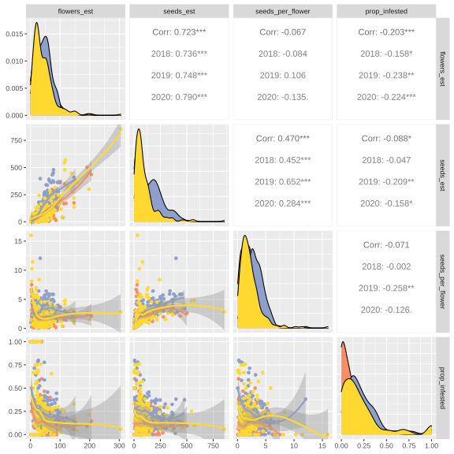
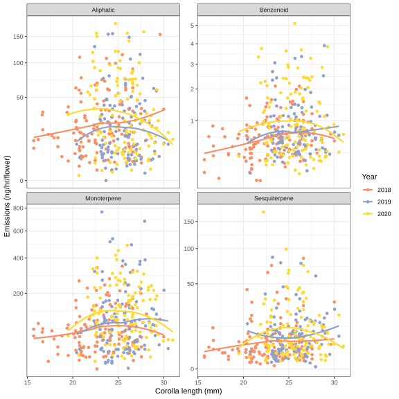
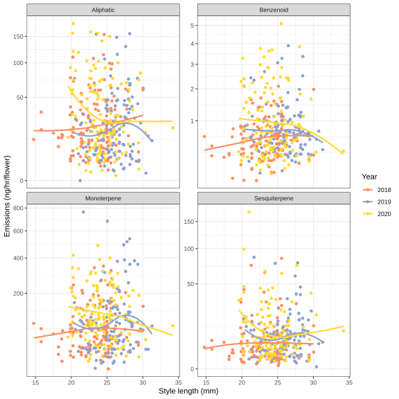
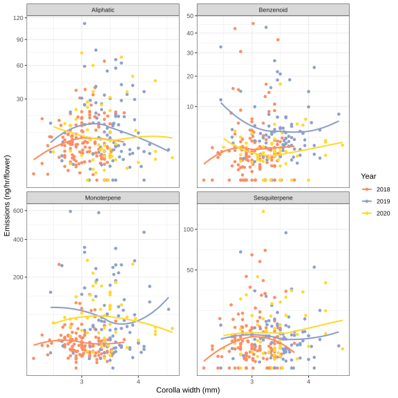
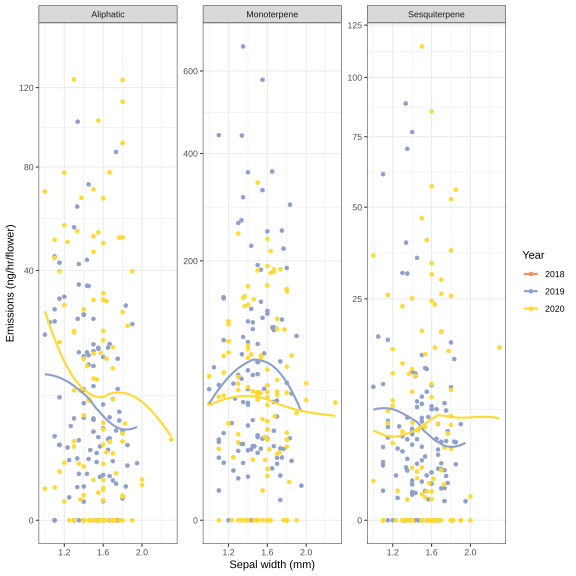
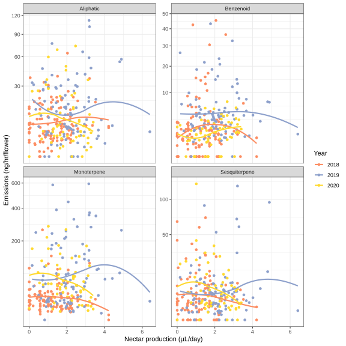
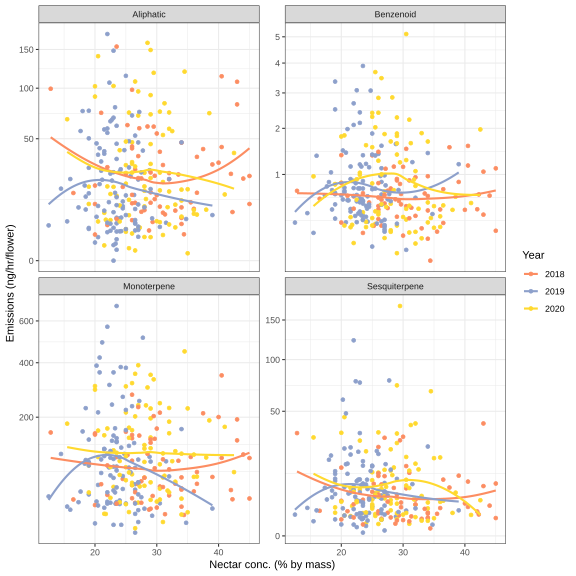
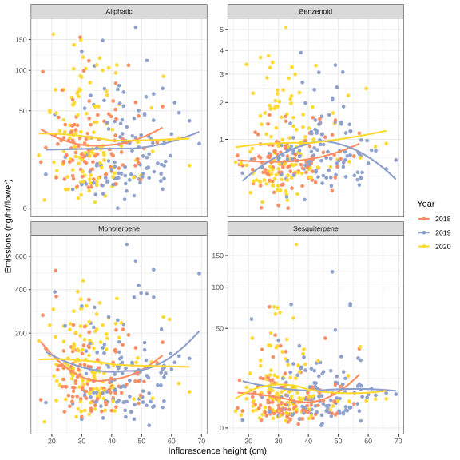
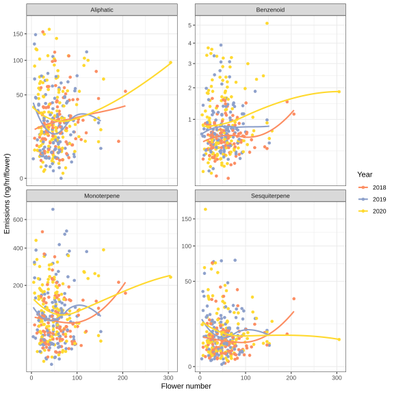

library(tidyverse)
library(lubridate)
library(vegan)
library(broom)
library(emmeans)
library(viridis)
library(ggvegan)
library(gridExtra)
library(dendsort)
library(pheatmap)
library(RColorBrewer)
library(DT)
library(lme4)
library(lmerTest)
library(knitr)
knitr::opts_chunk$set(comment="", cache=T, warning = F, message = F,
fig.path = "images_volatiles2020/", dev="svglite", dev.args=list(fix_text_size=FALSE), fig.height=8, fig.width=8)
options(digits=4) # for kables
# load short names and standard regessions
ipochems <- read_csv("data/volatiles/Ipo volatile compounds - chemsf_ipo.csv") %>%
select(name, shortname, standard, verdict) %>% filter(verdict != "") %>%
mutate(standard = fct_recode(standard, "Methyl_salicylate"="Benzaldehyde"), # benzaldehyde regressions not reliable
class = fct_recode(standard, Aliphatic="Hexenol", Benzenoid="Methyl_salicylate", Benzenoid="Indole",
Sesquiterpene="Caryophyllene", Monoterpene="alpha_Pinene", Monoterpene="Linalool")) %>%
left_join(read_csv("data/volatiles/regressions_181921_filtered_slopes.csv") %>%
pivot_wider(id_cols=standard, names_from="year", names_prefix="area_per_ng", values_from=area_per_ng))
class_pal <- set_names(c("#BC0060","#027B8C","#E56E00","#86D400"), levels(ipochems$class))
#shorten chemical names and merge compounds with multiple names
shortnames <- ipochems %>% select(name, shortname) %>% filter(shortname!="") %>% deframe()
#shortnames[shortnames %in% shortnames[duplicated(shortnames)]]
greekify <- function(names) {
names %>%
str_replace("^a-","\U03B1-") %>% str_replace("-a-","-\U03B1-") %>%
str_replace("^b-","\U03B2-") %>% str_replace("-b-","-\U03B2-") %>%
str_replace("^g-","\U03B3-") %>% str_replace("-g-","-\U03B3-")
}
load("data/volatiles/maxfield_volatiles.rda")
load("data/maxfield_data.rda")
#TODO checking on duplicate filenames
maxfmeta.dupes <- which(duplicated(maxfmeta$FileName))
maxfmeta$FileName[maxfmeta.dupes]#two are duplicated## [1] "2D218_July17_08042018.qgd" "4B955_29_210709_792021_27.qgd"#2D218_July17_08042018.qgd matched to two Markes tubes desorbed 17 min apart, second verdict="mismatch"
#4B955_29_210709_792021_27.qgd matched to two Markes tubes desorbed 15 min apart, one matched floral other ambient, also has verdict="mismatch" - this row not in volsmeta though
maxf <- maxf[!duplicated(maxfmeta$FileName),]
maxfmeta <- maxfmeta[!duplicated(maxfmeta$FileName),]
load("data/volatiles/maxfield210827.Rdata")
maxf.data.cut <- maxf.data[maxf.data$Filename %in% maxfmeta$FileName,] #load long data
maxf.data.cut <- distinct(select(maxf.data.cut, -batch)) #TODO knock off a few files entered twice (see maxfield_gc_
#maxf.data.cut %>% group_by(Filename) %>% count() #540
maxf.data.cut$Name <- recode(maxf.data.cut$Name, !!!shortnames)
#check for duplicates
#View(vt %>% filter(!exclude %in% c("flowers", "incomplete", "resample")) %>% count(sampledate.file, plot.file, subplot.file, plant.file) %>% filter(n>1) %>% left_join(vt)) #exclude="resample"
#View(maxfmeta %>% count(sampledate,plantid) %>% filter(n>1) %>% left_join(maxfmeta))
#TODO fix these GCMS filename duplicates
volsmeta <- maxfmeta %>% mutate(sampledate = as.Date(sampledate), year = factor(year(sampledate))) %>%
drop_na(plotid) %>% #cut out ambients, leaving 459 chromatograms
filter(year %in% c("2018","2019","2020")) %>% droplevels() %>%
mutate(plot=str_sub(plotid, 1,1), subplot=str_sub(plotid, 2,2),
sequence.date = date(sequence.start),
sequence.year = year(sequence.date)) %>%
rename(sampledate.file=sampledate, plot.file = plot, subplot.file=subplot, plant.file=plant) %>%
left_join(vt %>% select(-c(colnames(treatments),"type","plantid")) %>%
filter(!exclude %in% c("flowers", "incomplete", "resample"))) %>%
left_join(treatments) %>% #assume that the written metadata is correct not the info in the .file name
mutate(total_time = end - bag,
total_time = replace_na(total_time, median(total_time, na.rm=T)),# fill in 45 minutes when missing metadata
pump_id=as.character(pump_id))
volsmeta <- left_join(volsmeta, volsmeta %>% count(sequence.date, sequence.start) %>% group_by(sequence.date) %>% mutate(sequence.12 = paste(sequence.date, row_number()))) #add the batch number for that day (1 or 2)
rownames(volsmeta) <- volsmeta$index
fitnesstraits <- c("seeds_est", "seeds_per_flower", "prop_uninfested", "eggs_per_flower")
fitnessnames <- c(traitnames, prop_uninfested = "Prop. uneaten fruits",
eggs_per_flower="Fly eggs per flower")[fitnesstraits]Sample size
Calculated from two datasets that will eventually match: datasheets from sampling and GC-MS filenames.
bind_rows(sampling=vt %>% group_by(year, type) %>% tally(),
filenames=maxfmeta %>% mutate(year=factor(year(sampledate))) %>% group_by(year, type) %>% tally(), .id="source") %>%
pivot_wider(names_from=c(year,type), values_from = n) %>% kable()| source | 2018_floral | 2019_floral | 2020_floral | 2018_ambient | 2019_ambient | 2020_ambient | 2021_ambient | 2021_floral |
|---|---|---|---|---|---|---|---|---|
| sampling | 153 | 142 | 167 | NA | NA | NA | NA | NA |
| filenames | 167 | 146 | 145 | 15 | 12 | 7 | 4 | 44 |
bind_rows(sampling=vt %>% filter(type=="floral") %>% group_by(year, water, snow) %>% tally(),
filenames=volsmeta %>% mutate(year=factor(year(sampledate.file))) %>% group_by(year, water, snow) %>% tally(), .id="source") %>%
pivot_wider(names_from=c(year), values_from = n) %>% kable()| source | water | snow | 2018 | 2019 | 2020 |
|---|---|---|---|---|---|
| sampling | Addition | Early | 28 | 15 | 21 |
| sampling | Addition | Normal | 28 | 40 | 28 |
| sampling | Control | Early | 28 | 24 | 40 |
| sampling | Control | Normal | 33 | 23 | 39 |
| sampling | Reduction | Early | 20 | 15 | 19 |
| sampling | Reduction | Normal | 16 | 25 | 20 |
| filenames | Addition | Early | 35 | 14 | 23 |
| filenames | Addition | Normal | 31 | 40 | 19 |
| filenames | Control | Early | 28 | 24 | 32 |
| filenames | Control | Normal | 34 | 25 | 35 |
| filenames | Reduction | Early | 22 | 17 | 18 |
| filenames | Reduction | Normal | 17 | 26 | 18 |
bind_rows(sampling = vt %>% filter(type=="floral") %>% group_by(sampledate.file) %>% tally(),
filenames = volsmeta %>% drop_na(sampledate.file) %>% group_by(sampledate.file) %>% tally(), .id="source") %>%
ggplot(aes(x=yday(sampledate.file), y=n, fill=source)) + geom_col(position=position_dodge(preserve="single")) +
facet_wrap(vars(year(sampledate.file)), ncol=1) +
labs(x="VOC sampling date (day of year)", y="Floral samples")
Matching datasheets and filenames
# diagnostics for matching up vt (datasheets) and volsmeta (filenames)
volsmeta.samp <- volsmeta %>% mutate(samp = paste(sampledate.file, plot.file, subplot.file, plant.file)) %>% arrange(samp) %>% pull(samp)
vt.samp <- vt %>% mutate(samp = paste(sampledate.file, plot.file, subplot.file, plant.file)) %>% arrange(samp) %>% pull(samp)
#intersect(volsmeta.samp, vt.samp) #in both volsmeta and vt
cat("Have files but not datasheet entries:")Have files but not datasheet entries:setdiff(volsmeta.samp, vt.samp) [1] "2018-07-06 5 B 15" "2018-07-09 6 D 167" "2018-07-30 5 A 173"
[4] "2018-07-30 5 A 175" "2018-07-30 5 A 181" "2018-07-30 5 C 216"
[7] "2018-07-30 6 A 160" "2018-07-30 6 B 25" "2018-07-30 6 B 34"
[10] "2018-07-30 6 C 102" "2018-07-30 6 C 82" "2018-07-30 6 C 87"
[13] "2018-07-30 6 D 38" "2018-07-30 6 D 45" "2019-07-17 5 B 1"
[16] "2019-07-17 5 C 214" "2019-07-17 5 D 264" "2019-07-17 6 A 156"
[19] "2019-07-17 6 B 29" "2019-07-17 6 C 83" "2019-07-17 6 D 40" cat("Have datasheet entries but no files:")Have datasheet entries but no files:setdiff(vt.samp, volsmeta.samp) [1] "2018-06-28 1 B 655" "2018-06-28 1 C 50" "2018-06-29 2 C 265"
[4] "2018-07-06 5 B 574" "2018-07-09 6 D 44" "2018-07-16 6 C 271"
[7] "2019-07-22 4 D 60" "2019-07-26 2 A 166" "2019-07-26 5 A 193"
[10] "2019-07-26 5 B 13" "2019-07-26 5 D 241" "2020-07-01 2 A 285"
[13] "2020-07-01 2 B 138" "2020-07-01 2 D 193" "2020-07-01 3 A 125"
[16] "2020-07-01 3 A 278" "2020-07-01 3 B 603" "2020-07-01 5 A 185"
[19] "2020-07-01 5 B 16" "2020-07-01 5 D 242" "2020-07-29 1 B 650"
[22] "2020-07-29 1 B 653" "2020-07-29 3 C 133" "2020-07-29 3 C 137"
[25] "2020-07-29 3 C 139" "2020-07-29 3 C 153" "2020-07-29 3 C 166"
[28] "2020-07-29 3 C 173" "2020-07-29 3 C 177" "2020-07-29 4 D 52"
[31] "2020-07-29 6 D 45" vt.volsmeta <- full_join(vt %>% select(vt.n, sampledate.file, plot.file, subplot.file, plant.file) %>% mutate(in.vt=T),
volsmeta %>% select(FileName, sampledate.file, plot.file, subplot.file, plant.file) %>% mutate(in.volsmeta=T)) %>%
mutate(across(c(in.vt, in.volsmeta), ~replace_na(.,FALSE)))
vt.volsmeta.count <- vt.volsmeta %>% count(sampledate.file, in.vt, in.volsmeta) %>% mutate(status=paste("datasheet",ifelse(in.vt,"yes","no"),"+","GCfile", ifelse(in.volsmeta,"yes","no")))
#View(vt.volsmeta.count %>% filter(!in.vt | !in.volsmeta) %>% arrange(sampledate.file))
ggplot(vt.volsmeta.count, aes(x=as.Date(sampledate.file),y=n, fill=status))+ geom_col() +
facet_wrap(vars(year(sampledate.file)), scales="free_x", ncol=1) +
scale_x_date(breaks=scales::date_breaks(width = "7 days"), minor_breaks = scales::date_breaks(width = "1 days")) +
theme_minimal() + theme(legend.position="top") + scale_fill_manual(values=c("red","orange","darkgreen")) +
labs(x="Sampling date (according to GCfile)", y="Samples", fill="Data status")
ggplot(volsmeta %>% filter(year %in% c(2018, 2020) | sequence.year==year), aes(x=sequence.date - sampledate)) +
geom_histogram() + facet_wrap(vars(year), ncol=1, scales="free_x") + theme_minimal()
Soil moisture
ggplot(vt %>% drop_na(water) %>% mutate(date=sampledate), aes(x=yday(date))) +
facet_wrap(vars(year), ncol = 1) +
scale_x_continuous(limits=c(160, 230)) +
geom_col(data=daily_precip_est, aes(y=EPA_NOAA_filled), fill=brewer.pal(7, "Set3")[7]) +
geom_point(aes(y=VWC, color=water), size=0.5) +
geom_line(aes(y=VWC, color=water),
data=vt %>% drop_na(water, VWC) %>% group_by(year, water, date=sampledate) %>% summarize(VWC=mean(VWC)), size=1) +
geom_line(aes(y=VWC, color=water),
data=sm %>% group_by(year, water, date) %>% summarize(VWC=mean(VWC)), size=0.5, alpha=0.5) +
scale_color_manual(values=water_pal) +
labs(x="Day of year", y="Soil moisture (%VWC) / Daily precipitation (mm)", color="Precipitation") + theme_bw()
Ambient controls
vt.ambi %>% filter(type=="ambient") %>% mutate(year=year(sampledate)) %>%
ggplot(aes(x=yday(sampledate))) + geom_bar() + facet_wrap(vars(year), ncol=1) +
labs(x="Day of year", y="Ambient samples") + scale_fill_manual(values=water_snow_pal)+ theme_minimal() 
setdiff(vt.ambi %>% filter(type=="floral") %>% pull(sampledate) %>% unique,
vt.ambi %>% filter(type=="ambient") %>% pull(sampledate) %>% unique) %>% as.Date(origin=ymd("1970-01-01"))[1] "2020-07-01" "2020-07-30" "2018-07-17"vt.ambi %>% count(type) #TODO check if all of these were run and used for filtering# A tibble: 2 × 2
type n
<fct> <int>
1 ambient 34
2 floral 462volsmeta %>% count(year, type) year type n
1 2018 floral 167
2 2019 floral 146
3 2020 floral 145volsmeta %>% count(type) type n
1 floral 458ggplot(vt.ambi %>% filter(type=="ambient"), aes(x=hour(bag), fill=year)) +
geom_histogram(show.legend = F, binwidth=1) + facet_wrap(vars(year), ncol=1) +
scale_fill_manual(values=year_pal) + theme_minimal() +
labs(x="Ambient control bagged (hr)", caption= paste(format(c(min(volsmeta$bag, na.rm=T), max(volsmeta$bag, na.rm=T)), "%H:%M"), collapse=" - "))
GCMS data checks
Bouquet
library(bouquet)
maxf.data.cut <- maxf.data.cut[maxf.data.cut$Name != "", ] #drop unidentified peaks
maxf.data.cut$Name <- droplevels(maxf.data.cut$Name)
longdata <- load_longdata(maxf.data.cut, sample="Filename", RT="Ret.Time", name="Name", area="Area", match = "SI", maxmatch=100)
metadata <- maxfmeta %>% as.data.frame() %>% #tibbles break bouquet's add_count_freqs
rename(thesample=sample) %>% #name conflict with bouquet
load_metadata(date="Date", sample="FileName", type="type")
vol.all <- make_sampletable(longdata, metadata)
chems <- make_chemtable(longdata, metadata)
chemsf <- chems %>%
filter_RT(2, 17) %>%
filter_match(0.8) %>%
filter_freq(0.1) %>%
filter_contaminant(cont.list = c("Hexyl chloroformate", "Trichloroacetic acid, 6-ethyl-3-octyl ester",
"Carbonic acid, decyl undecyl ester","11-Methyldodecanol",
"3-Ethyl-3-methylheptane", "2-Pentanone, 4-hydroxy-4-methyl-",
"1-Octanol, 2-butyl-", "L-Lactic acid","2-Oxepanone, 7-methyl-",
"1-Decanol, 2-octyl-","Ethylbenzene","Tritetracontane",
"Cyclopentanone, 2-ethyl-","Ethanol, 2-(hexyloxy)-",
"8-Hexadecenal, 14-methyl-, (Z)-")) %>%
filter_area(min_maximum = 1e6) %>%
filter_ambient_ratio(vol.all, metadata, ratio = 4) %>%
combine_filters()
chemsf$filter_final <- with(chemsf, (filter_RT == "OK" & filter_match =="OK" &
filter_freq.floral == "OK" &
filter_area == "OK" & filter_contaminant == "OK"))
#now run t-tests after rarity filtering
#don't filter by ambient ratio first, see paper on problems: https://doi.org/10.1186/1471-2105-11-450
chemsf <- bind_rows(chemsf %>% filter(filter_final) %>%
filter_ambient_ttest(prune_sampletable(vol.all, chemsf, metadata),
metadata, alpha = 0.05, adjust = "fdr"),
chemsf %>% filter(!filter_final)) %>%
mutate(filter_ambient_ttest=fct_na_value_to_level(filter_ambient_ttest, "notchecked"),
filter_final = filter_final & filter_ambient_ratio =="OK") %>%
arrange(match(name, colnames(vol.all)))
bouquet::plot_filters(chemsf, option="rarity", yrange=3.5)
bouquet::plot_filters(chemsf, option="ambient", yrange=2.5)
bouquet::plot_filters(chemsf, option="volcano", yrange=2.5, alpha_excluded = 0.5)
bouquet::plot_filters(chemsf, option="prop")
Filtering
Filtering criteria (verdict=“fvoc” in the table below):
- Present in 10% of samples
- Maximum peak area is at least 4000000
- Passes t-test against ambient controls with FDR correction OR mean exceeds 4x mean of controls
- Not a known contaminant (Oxybenzone, Ethanol, 2,2’-oxybis-, Butylated Hydroxytoluene, Caprolactam, [1,1’-Bicyclopentyl]-2-one, L-Lactic acid, Pentadecane, 8-hexyl-, Decane, 2,8,8-trimethyl-, 2-Methyltetradecan-2-ol)
Note that these potential floral compounds did not meet the tests against ambient controls: 2-phenylacetaldehyde, 3-carene, D-limonene, camphene, benzaldehyde, a-thujene, sabinene, abietadiene, 2-ethylhexan-1-ol
Plus (verdict other than “fvoc”):
- bis14: compounds included in Bischoff et al. (2014)
- keep: kept since they are known floral volatiles
- keep_leaf: kept since they are known leaf volatiles
- merge: a compound that is a synonym of one of the floral volatiles (b-caryophyllene, b-ocimene, verbenone)
#vols <- maxf[volsmeta$index,]
vols <- vol.all[volsmeta$FileName,]
vols.cut <- vols[,colSums(vols)>3e8]
rownames(vols.cut) <- volsmeta$index
vol <- vols[volsmeta$FileName, chemsf$name[chemsf$filter_final]]#don't cut ambients yet
rownames(vol) <- volsmeta$index
# ipochems <- read_csv("data/volatiles/Ipo volatile compounds - chemsf_ipo.csv") %>%
# filter(verdict %in% c("bis14", "fvoc", "keep","keep_leaf","merge"),
# name %in% colnames(vols)[colSums(vols)>0], name != "Anisole") %>% #filter empty compounds
# mutate(standard = fct_recode(standard, "Methyl_salicylate"="Benzaldehyde"), # benzaldehyde regressions not reliable
# class = fct_recode(standard, Aliphatic="Hexenol", Benzenoid="Methyl_salicylate", Benzenoid="Indole",
# Sesquiterpene="Caryophyllene", Monoterpene="alpha_Pinene", Monoterpene="Linalool")) %>%
# left_join(read_csv("data/volatiles/regressions_181921_filtered_slopes.csv") %>%
# pivot_wider(id_cols=standard, names_from="year", names_prefix="area_per_ng", values_from=area_per_ng))
# class_pal <- set_names(c("#BC0060","#027B8C","#E56E00","#86D400"), levels(ipochems$class))
#
# ipochems %>% select(verdict, name, Ret.Time, mean, max, match, freq.floral, freq.ambient, ambient_ratio, filter_ambient_ttest, filters_passed, standard) %>%
# arrange(desc(freq.floral)) %>% mutate(across(starts_with("freq."), round, 3)) %>%
# DT::datatable(caption="Volatile compounds to use for analysis")
#ipogood <- ipochems$name
ipogood <- colnames(vol)
#vols.good <- vols[,ipogood] %>%
vols.good <- vol %>%
#sweep(2, ipochems$area_per_ng, FUN = '/') %>% # convert areas to nanograms
sweep(1, as.numeric(volsmeta$total_time, units="hours"), FUN = '/') #divide by equilibration + pumping time
ipochemsf <- ipochems[match(colnames(vols.good), ipochems$shortname),]
for(yr in unique(volsmeta$sequence.year)) {
thisyr <- volsmeta$sequence.year==yr
#TODO these slopes are leading to most of the year effects. try using one year for now.
vols.good[thisyr,] <- sweep(vols.good[thisyr,], 2, pull(ipochemsf, paste0("area_per_ng","2019")), FUN = '/')# convert areas to nanograms
}
# merge peaks identified as multiple compounds
# give volatiles shorter names too
# vols.good <- left_join(ipochems %>% select(name, shortname),
# vols.good %>% t %>% as.data.frame %>% rownames_to_column("name")) %>%
# select(-name) %>% group_by(shortname) %>%
# summarize(across(everything(), sum)) %>%
# column_to_rownames("shortname") %>% t %>% as.data.frame
ipochemsf <- ipochemsf %>% #group_by(name=shortname, verdict, standard, class) %>%
#summarize(.groups = "drop") %>%
left_join(tibble(shortname = colnames(vols.good), # the following values are new, computed on the filtered dataset
freq.floral = map_dbl(as.data.frame(vols.good>0), mean),
mean.floral = map_dbl(vols.good, mean),
max.floral = map_dbl(vols.good, max))) %>%
select(-name) %>% rename(name=shortname)
rownames(ipochemsf) <- ipochemsf$name
#ipogood == ipochemsf$name
k <- 2 #split into this many k-means cluster per year
volsmeta$cluster <- 0
for(yr in unique(year(volsmeta$sequence.start))) {
thisyr <- volsmeta$sequence.year==yr
chems.include <- setdiff(colnames(vols.cut), ipogood) #drop alpha-pinene so this is all nonfloral
set.seed(1)
volsmeta$cluster[thisyr] <- kmeans(decostand(vols.cut[thisyr,chems.include], method="log"), k, nstart=3)$cluster
}
volsmeta <- volsmeta %>%
mutate(year.cluster = paste0(year, if_else(sequence.year == 2018, "", paste0(".",cluster))),
total = rowSums(vols.good),
sampledate = coalesce(sampledate, sampledate.file))#get sampling date from filename when no metadata
# Cut contaminated samples
#TODO now this is up to 45 samples with zeros!
nonzero <-rowSums(vols.good) > 0 #one sample ("55" on row 44) has no volatiles
set.seed(1) # ensures the contaminated samples are in cluster.good = 1
volsmeta$cluster.good <-factor(kmeans((vols.good)^(1/3), centers=3, nstart=3)$cluster)
set.seed(1) # ensures the contaminated samples are in cluster.cut = 1
volsmeta$cluster.cut <-factor(kmeans((vols.cut)^(1/3), centers=3, nstart=3)$cluster)
keep.samples <- nonzero#unname(nonzero & !(volsmeta$year.cluster %in% c("2019.1", "2020.1")))
volsmeta <- volsmeta[keep.samples,]
vols <- vols[keep.samples,]
vols.cut <- vols.cut[keep.samples,]
vols.good <- vols.good[keep.samples,]
minsamples <- 70
vols.good.top <- vols.good[,colSums(decostand(vols.good,"pa"))> minsamples]#occur in more than minsamples
ipogood.top <- names(sort(colSums(vols.good.top), decreasing=T))
volsmeta.good.top <- bind_cols(volsmeta, vols.good.top) %>%
pivot_longer(-all_of(colnames(volsmeta))) %>%
mutate(name = fct_relevel(name, ipogood.top))
mnps.plantyr.traits <- mnps.plantyr %>%
select(year, plotid, plant, all_of(traits), eggs_per_flower) %>%
mutate(prop_uninfested = 1 - prop_infested)
traits.good.top <- volsmeta.good.top %>%
left_join(mnps.plantyr.traits) %>%
mutate(name = fct_relevel(name, ipogood.top))
#vols.drydown <- vols.good[,c("1,3-octadiene","benzyl alcohol", "a-pinene","a-farnesene", "b-pinene", "b-ocimene")]
#volsmeta.drydown <- bind_cols(volsmeta, vols.drydown) %>% pivot_longer(-all_of(colnames(volsmeta)))
vols.class <- vols.good %>% t() %>% as.data.frame() %>% rownames_to_column("name") %>%
left_join(select(ipochemsf, name=name, class)) %>%
group_by(class) %>% summarize(across(-name, sum)) %>% column_to_rownames("class") %>% t() %>% as.data.frame()
volsmeta.class <- bind_cols(volsmeta, vols.class) %>%
pivot_longer(-all_of(colnames(volsmeta)))
traits.class <- volsmeta.class %>% left_join(mnps.plantyr.traits)
volsmeta.traits <- volsmeta %>% left_join(mnps.plantyr.traits) #wide formatCompound relative amounts
vols.good %>% decostand(method = "tot") %>% summarize(across(everything(), mean)) %>%
t() %>% as.data.frame() %>% rownames_to_column("name") %>% rename(mean_percent = V1) %>%
arrange(desc(mean_percent)) %>% kable(caption = "Mean relative amounts of each volatile")| name | mean_percent |
|---|---|
| a-pinene | 0.5070 |
| D-limonene | 0.1081 |
| (E)-hex-3-en-1-ol | 0.0734 |
| b-caryophyllene | 0.0474 |
| (E)-b-ocimene | 0.0428 |
| sabinene | 0.0421 |
| [(E)-hex-3-enyl] acetate | 0.0316 |
| b-myrcene | 0.0309 |
| petasitene | 0.0240 |
| 3-carene | 0.0181 |
| (E)-4-oxohex-2-enal | 0.0138 |
| [(Z)-hex-3-enyl] butanoate | 0.0104 |
| [(Z)-hex-3-enyl] 2-methylpropanoate | 0.0092 |
| (2E)-2,7-dimethylocta-2,6-dien-1-ol | 0.0077 |
| m-cymene | 0.0072 |
| [(Z)-hex-3-enyl] 2-methylbutanoate | 0.0068 |
| hexan-1-ol | 0.0067 |
| b-caryophyllene oxide | 0.0062 |
| [(E)-hex-4-enyl] butanoate | 0.0046 |
| a-copaene | 0.0022 |
Sample size after filtering
volsmeta %>% count(year) %>%
kable(caption = "Samples sizes by year")| year | n |
|---|---|
| 2018 | 166 |
| 2019 | 134 |
| 2020 | 113 |
volsmeta %>% count(year, water, snow) %>%
pivot_wider(names_from=c(year), values_from = n) %>%
kable(caption = "Samples sizes by year and treatment")| water | snow | 2018 | 2019 | 2020 |
|---|---|---|---|---|
| Addition | Early | 35 | 13 | 16 |
| Addition | Normal | 31 | 37 | 11 |
| Control | Early | 28 | 21 | 25 |
| Control | Normal | 34 | 22 | 30 |
| Reduction | Early | 21 | 16 | 15 |
| Reduction | Normal | 17 | 25 | 16 |
volsmeta %>% count(year, sampledate) %>%
kable(caption = "Samples sizes by date")| year | sampledate | n |
|---|---|---|
| 2018 | 2018-06-22 | 6 |
| 2018 | 2018-06-25 | 4 |
| 2018 | 2018-06-27 | 4 |
| 2018 | 2018-06-28 | 4 |
| 2018 | 2018-06-29 | 5 |
| 2018 | 2018-07-03 | 8 |
| 2018 | 2018-07-05 | 21 |
| 2018 | 2018-07-06 | 17 |
| 2018 | 2018-07-09 | 26 |
| 2018 | 2018-07-11 | 12 |
| 2018 | 2018-07-16 | 17 |
| 2018 | 2018-07-17 | 6 |
| 2018 | 2018-07-24 | 11 |
| 2018 | 2018-07-30 | 14 |
| 2018 | 2018-08-02 | 11 |
| 2019 | 2019-07-16 | 7 |
| 2019 | 2019-07-17 | 7 |
| 2019 | 2019-07-21 | 13 |
| 2019 | 2019-07-22 | 7 |
| 2019 | 2019-07-24 | 44 |
| 2019 | 2019-07-26 | 22 |
| 2019 | 2019-07-29 | 8 |
| 2019 | 2019-08-05 | 26 |
| 2020 | 2020-07-01 | 7 |
| 2020 | 2020-07-08 | 13 |
| 2020 | 2020-07-15 | 21 |
| 2020 | 2020-07-22 | 37 |
| 2020 | 2020-07-29 | 20 |
| 2020 | 2020-07-30 | 15 |
#TODO investigate dates with only one sample - likely errors
volsmeta %>% count(year, sampledate) %>% filter(n>1) %>% count(year) %>%
kable(caption="More than one sample taken on these dates")| year | n |
|---|---|
| 2018 | 15 |
| 2019 | 8 |
| 2020 | 6 |
volsmeta %>% count(year, plantid) %>% ggplot(aes(x=n)) + facet_wrap(vars(year), ncol=1) +geom_histogram(binwidth=1)
volsmeta %>% count(year, plantid) %>% count(year) year n
1 2018 112
2 2019 123
3 2020 102Time of day
ggplot(volsmeta, aes(x=bag, fill=year)) + geom_histogram(show.legend = F) + facet_wrap(vars(year), ncol=1) +
scale_fill_manual(values=year_pal) + theme_minimal() +
labs(x="Flower bagged", caption= paste(format(c(min(volsmeta$bag, na.rm=T), max(volsmeta$bag, na.rm=T)), "%H:%M"), collapse=" - "))
ggplot(volsmeta, aes(x=bag+total_time, fill=year)) + geom_histogram(show.legend = F) + facet_wrap(vars(year), ncol=1) +
scale_fill_manual(values=year_pal) + theme_minimal() +
labs(x="Pump stopped", caption= paste(format(c(min(volsmeta$bag+volsmeta$total_time, na.rm=T), max(volsmeta$bag+volsmeta$total_time, na.rm=T)), "%H:%M"), collapse=" - "))
volsmeta %>% count(beforenoon=hour(bag+total_time) <13) beforenoon n
1 FALSE 33
2 TRUE 350
3 NA 30ggplot(volsmeta, aes(x=end-bag)) + geom_histogram() + labs(x="Equilibration and pumping time (min)")
Distributed among treatments
ggplot(volsmeta, aes(x=yday(sampledate), fill=paste(water, snow))) + geom_bar() + facet_wrap(vars(year), ncol=1) +
labs(fill="Precipitation, snowmelt", x="Day of year", y="Samples") + scale_fill_manual(values=water_snow_pal)+ theme_minimal() 
list(water=chisq.test(with(vt, table(sampledate, water))),
snow=chisq.test(with(vt, table(sampledate, snow))),
water_snow=chisq.test(with(vt, table(sampledate, paste(water, snow))))) %>%
map_dfr(tidy, .id="treatment") %>% kable(caption="Test of randomness of treatments on each sampling date")| treatment | statistic | p.value | parameter | method |
|---|---|---|---|---|
| water | 81.17 | 0.0059 | 52 | Pearson’s Chi-squared test |
| snow | 42.26 | 0.0231 | 26 | Pearson’s Chi-squared test |
| water_snow | 186.44 | 0.0009 | 130 | Pearson’s Chi-squared test |
Flowers and buds
volsmeta %>% count(flowers) flowers n
1 1 350
2 2 3
3 NA 60volsmeta %>% count(buds>0) buds > 0 n
1 FALSE 289
2 TRUE 63
3 NA 61cat(paste("Buds included in", round(sum(volsmeta$buds>0, na.rm=T)/sum(volsmeta$buds>=0, na.rm=T)*100), "% of samples"))Buds included in 18 % of samplesHeatmap
annot_pal <- list(
sequence.date = volsmeta %>% mutate(yr = sequence.year) %>% group_by(yr) %>% summarize(n = length(unique(sequence.date))) %>%
pull(n) %>% map(scales::hue_pal()) %>% unlist() %>% set_names(unique(volsmeta$sequence.date)),
cluster = set_names(brewer.pal(8, "Set1")[1:length(unique(volsmeta$cluster))], unique(volsmeta$cluster)))
pheatmap(as.matrix(t(vols.cut))^(1/4),
cluster_cols=F, show_colnames=F,
clustering_method="mcquitty", clustering_distance_rows="correlation",
clustering_callback = function(hc, ...){dendsort(hc, type="average")},
scale="none", color=mako(512),main="Unfiltered top volatiles",
annotation_col=volsmeta %>% select(sequence.date, cluster) %>% mutate(across(everything(), factor)),
annotation_colors = annot_pal,
gaps_col = which(diff(year(volsmeta$sequence.date))>0))
pheatmap(as.matrix(t(vols.good))^(1/4),
cluster_cols=F, show_colnames=F,
clustering_method="mcquitty", clustering_distance_rows="correlation",
clustering_callback = function(hc, ...){dendsort(hc, type="average")},
scale="none", color=mako(512),main="Filtered volatiles",
annotation_col=volsmeta %>% select(sequence.date, cluster) %>% mutate(across(everything(), factor)),
annotation_colors = annot_pal,
gaps_col = which(diff(year(volsmeta$sequence.date))>0))
pinene_correlates <- cor(sqrt(vols[,colSums(vols)>1e7])) %>% as.data.frame() %>%
filter(`a-pinene`>0.15) %>% rownames()
pheatmap(as.matrix(t(vols[,pinene_correlates]))^(1/4),
cluster_cols=F, show_colnames=F,
clustering_method="mcquitty", clustering_distance_rows="correlation",
clustering_callback = function(hc, ...){dendsort(hc, type="average")},
scale="none", color=mako(512),
annotation_col=volsmeta %>% select(sequence.date, cluster) %>% mutate(across(everything(), factor)),
annotation_colors = annot_pal,
gaps_col = which(diff(year(volsmeta$sequence.date))>0), main="Volatiles that correlate with alpha-pinene")
pheatmap(as.matrix(t(vols.class))^(1/4),
cluster_cols=F, cluster_rows=F, show_colnames=F,
scale="none", color=mako(512),main="Filtered volatiles classes",
annotation_col=volsmeta %>% select(sequence.date, cluster) %>% mutate(across(everything(), factor)),
annotation_colors = annot_pal,
gaps_col = which(diff(year(volsmeta$sequence.date))>0))
Chromatograms by GCMS run date
Univariate
plot_vols_rundate <- function(type, checkvols) {
volsmeta %>% mutate(yr=year(Desorb.Start.Time)) %>%
bind_cols(vols %>% select(checkvols)) %>% pivot_longer(cols=checkvols) %>%
ggplot(aes(x=Desorb.Start.Time)) + facet_grid(name ~ yr, scales="free") +
geom_point(aes(y=value, color=name), alpha=0.3) +
guides(color="none") + theme_bw() + labs(x="GCMS run time", y="Area", title=type)
}
plot_vols_rundate("Terpenes", c("a-pinene", "b-myrcene","(E)-b-ocimene","b-caryophyllene","linalool","longifolene"))
plot_vols_rundate("Benzenoids", c("benzophenone","methyl salicylate","anisole"))
plot_vols_rundate("Green leaf volatiles", c("(E)-hex-3-en-1-ol"))Multivariate
for(categories in list(c("water","snow"),"plot","observer","pump_id","sequence.12", "sampledate", c("sampledate", "sequence.12"), c("sampledate.observer", "sequence.12"))) {
cluster_counts <- volsmeta %>%
mutate(sampledate = coalesce(sampledate, sampledate.file),
sampledate.observer = paste(sampledate, observer)) %>%
count(!!!syms(c("sequence.year", categories, "cluster")))
p <- ggplot(cluster_counts, aes(x=factor(paste(!!!syms(categories), sep=" x ")),
y=n, fill=factor(paste0(sequence.year," C",cluster)))) +
geom_col() + facet_wrap(vars(sequence.year), scales="free_x") +
theme(axis.text.x = element_text(angle=90)) + labs(fill="Cluster", x=paste(categories, collapse=" x ")) +
scale_fill_brewer(palette="Paired")
print(p)
if(length(categories)>1) {
(p2 <- cluster_counts %>% filter(sequence.year !="2018") %>% mutate(cluster=factor(cluster), across(where(~ !is.numeric(.)),factor)) %>%
ggplot(aes_string(x=categories[[1]], y = categories[[2]], size="n", color="cluster")) + geom_point(shape=1, stroke=1) +
facet_wrap(vars(sequence.year), scales="free") + theme_minimal()+ scale_size_area(max_size=15)+
theme(axis.text.x = element_text(angle=90)) + scale_color_manual(values=c("darkgreen","magenta")))
print(p2)
}
}
ggplot(volsmeta, aes(x=Desorb.Start.Time, y=cluster)) + geom_line() + geom_point(aes(color=factor(mday(sampledate))))+
facet_wrap(vars(sequence.year), scales="free_x", ncol=1) + scale_color_manual(values=sample(rainbow(30)))+
scale_x_datetime(date_breaks="1 day", guide=guide_axis(angle=90)) + scale_y_discrete()for(yr in unique(year(volsmeta$sequence.start))) {
print(yr)
yrfilter <- year(volsmeta$sequence.start) == yr
vols.cap <- capscale(sqrt(vols.cut[yrfilter,]) ~ factor(date(sequence.start)), data=volsmeta[yrfilter,],
distance="bray")
print(vols.cap)
print(anova(vols.cap, by="term"))
# vols.cap.points <- fortify(vols.cap) %>% as_tibble()
# vols.cap.samples <- vols.cap.points %>% filter(Score=="sites") %>%
# left_join(volsmeta, by=c("Label"="index"))
# vols.cap.chems <- vols.cap.points %>% filter(Score=="species")
# p <- vols.cap.samples %>%
# mutate(sequence.date = date(sequence.start)) %>%
# filter(sequence.year == yr) %>%
# ggplot(aes(x=CAP1, y=CAP2)) + theme_classic()+
# geom_point(aes(color=factor(sequence.date)), size=3) + scale_color_hue("Run date")
# print(p)
}Ordinations
NMDS
(vols.nmds <- metaMDS(sqrt(vols.cut), autotransform=FALSE, trace=F))
Call:
metaMDS(comm = sqrt(vols.cut), autotransform = FALSE, trace = F)
global Multidimensional Scaling using monoMDS
Data: sqrt(vols.cut)
Distance: bray
Dimensions: 2
Stress: 0.1568
Stress type 1, weak ties
Best solution was not repeated after 20 tries
The best solution was from try 3 (random start)
Scaling: centring, PC rotation, halfchange scaling
Species: expanded scores based on 'sqrt(vols.cut)' vols.nmds.points <- fortify(vols.nmds) %>% as_tibble()
vols.nmds.samples <- vols.nmds.points %>% filter(Score=="sites") %>%
left_join(volsmeta, by=c("Label"="index"))
vols.nmds.chems <- vols.nmds.points %>% filter(Score=="species")
(scents.nmds <- metaMDS(sqrt(vols.good), autotransform=FALSE, trace=F)) #had noshare = FALSE
Call:
metaMDS(comm = sqrt(vols.good), autotransform = FALSE, trace = F)
global Multidimensional Scaling using monoMDS
Data: sqrt(vols.good)
Distance: bray
Dimensions: 2
Stress: 0.2154
Stress type 1, weak ties
Best solution was not repeated after 20 tries
The best solution was from try 0 (metric scaling or null solution)
Scaling: centring, PC rotation, halfchange scaling
Species: expanded scores based on 'sqrt(vols.good)' nmds.points <- fortify(scents.nmds) %>% as_tibble()
nmds.samples <- nmds.points %>% filter(Score=="sites") %>% left_join(volsmeta, by=c("Label"="index"))
nmds.chems <- nmds.points %>% filter(Score=="species") %>% left_join(ipochemsf, by=c("Label"="name"))
# By year
vols.plot <- ggplot(vols.nmds.samples, aes(x=NMDS1, y=NMDS2)) + theme_classic() +
geom_point(aes(color=year)) + scale_color_manual(values=year_pal)+
labs(title="Unfiltered NMDS", color="Year")
vols.good.plot <- ggplot(nmds.samples, aes(x=NMDS1, y=NMDS2)) + theme_classic() +
#geom_text(data=nmds.chems, aes(label=Label)) +
geom_point(aes(color=year))+ scale_color_manual(values=year_pal)+
#geom_point(aes(color=water, shape=year)) + scale_color_manual("Precipitation", values=water_pal) +
labs(title="Filtered NMDS", color="Year")
grid.arrange(vols.plot, vols.good.plot)
# By a-Pinene
vols.plot <- ggplot(vols.nmds.samples, aes(x=NMDS1, y=NMDS2, shape=year)) + theme_classic() +
geom_point(aes(color=vols.good$`a-pinene`^(1/6))) +
labs(title="Unfiltered NMDS", color="a-Pinene", shape="Year") + scale_color_viridis_c()
vols.good.plot <- ggplot(nmds.samples, aes(x=NMDS1, y=NMDS2, shape=year)) + theme_classic() +
geom_point(aes(color=vols.good$`a-pinene`^(1/6)))+
labs(title="Filtered NMDS", color="a-Pinene", shape="Year")+ scale_color_viridis_c()
grid.arrange(vols.plot, vols.good.plot)
ggplot(nmds.samples, aes(x=NMDS1, y=NMDS2)) + theme_classic() +
geom_point(aes(color=year))+ scale_color_manual(values=year_pal)+
geom_text(data=nmds.chems, aes(label=Label, alpha=freq.floral^(1/3))) +
labs(title="Filtered NMDS", color="Year")
#Cluster based on filtered data
volsmeta %>% count(cluster.good, year) %>% arrange(year) %>%
pivot_wider(names_from="year", values_from="n") %>%
kable(caption = "Contaminated samples cluster = 1 based on filtered data")
vols.plot <- ggplot(vols.nmds.samples, aes(x=NMDS1, y=NMDS2)) + theme_classic() +
geom_point(aes(color=paste(cluster.good, year)))+
labs(title="Unfiltered NMDS by year", color="Filtered cluster")
vols.good.plot <- ggplot(nmds.samples, aes(x=NMDS1, y=NMDS2)) + theme_classic() +
geom_point(aes(color=paste(cluster.good, year)))+
labs(title="Filtered NMDS by year", color="Filtered cluster")
grid.arrange(vols.plot, vols.good.plot)
#cluster based on unfiltered data
set.seed(1)
volsmeta$cluster.cut <-factor(kmeans((vols.cut)^(1/3), centers=3, nstart=3)$cluster)
volsmeta %>% count(cluster.cut, year) %>% arrange(year) %>%
pivot_wider(names_from="year", values_from="n") %>%
kable(caption = "Contaminated samples cluster = 1 based on unfiltered data")
vols.plot <- ggplot(vols.nmds.samples, aes(x=NMDS1, y=NMDS2)) + theme_classic() +
geom_point(aes(color=paste(cluster.cut, year)))+
labs(title="Unfiltered NMDS by year", color="Unfiltered cluster")
vols.good.plot <- ggplot(nmds.samples, aes(x=NMDS1, y=NMDS2)) + theme_classic() +
geom_point(aes(color=paste(cluster.cut, year)))+
labs(title="Filtered NMDS by year", color="Unfiltered cluster")
grid.arrange(vols.plot, vols.good.plot)
# Ordinations for each year
for(yr in unique(year(volsmeta$sequence.start))) {
thisyr <- year(volsmeta$sequence.start)==yr
(vols.nmds <- metaMDS(sqrt(vols.cut[thisyr,]), autotransform=FALSE, trace=F))
vols.nmds.points <- fortify(vols.nmds) %>% as_tibble()
vols.nmds.samples <- vols.nmds.points %>% filter(Score=="sites") %>%
left_join(volsmeta, by=c("Label"="index")) %>% filter(sequence.year == yr)
vols.nmds.chems <- vols.nmds.points %>% filter(Score=="species")
(scents.nmds <- metaMDS(sqrt(vols.good[thisyr,]), autotransform=FALSE, trace=F))
nmds.points <- fortify(scents.nmds) %>% as_tibble()
nmds.samples <- nmds.points %>% filter(Score=="sites") %>%
left_join(volsmeta, by=c("Label"="index")) %>% filter(sequence.year == yr)
nmds.chems <- nmds.points %>% filter(Score=="species")
vols.plot <- vols.nmds.samples %>%
ggplot(aes(x=NMDS1, y=NMDS2)) + theme_classic()+ labs(title = paste("Unfiltered NMDS run",yr))+
geom_text(aes(color=factor(sequence.date), label=cluster), size=4) + scale_color_hue("Run date")
vols.good.plot <- nmds.samples %>%
ggplot(aes(x=NMDS1, y=NMDS2)) + theme_classic()+ labs(title = paste("Filtered NMDS run",yr))+
geom_text(aes(color=factor(sequence.date), label=cluster), size=4) + scale_color_hue("Run date")
grid.arrange(vols.plot, vols.good.plot)
}Correlations
corr.annot <- ipochemsf %>% select(name, Class=class, Frequency=freq.floral) %>% #`Retention time`=RT,
column_to_rownames("name") %>%
filter(Frequency>0.1)
corr.vols <- cor(vols.good[, rownames(corr.annot)], method="pearson")
pheatmap(corr.vols,
scale="none", clustering_method = "mcquitty",
color=colorRampPalette(c("blue","white","red"))(200), breaks=seq(-1,1,by=0.01),
annotation_col=corr.annot, annotation_row=corr.annot,
annotation_colors = list(Class=class_pal))
(corr.vols*lower.tri(corr.vols)) %>% as.data.frame() %>% rownames_to_column("name1") %>%
pivot_longer(cols=-name1, values_to="cor") %>% arrange(desc(cor)) %>% filter(cor!=1, cor!=0) %>%
mutate(cor.cut = cut_width(cor, width=0.25, boundary=0)) %>% count(cor.cut)# A tibble: 4 × 2
cor.cut n
<fct> <int>
1 [-0.25,0] 34
2 (0,0.25] 103
3 (0.25,0.5] 28
4 (0.5,0.75] 6Plasticity analyses
Plasticity to treatments
CAP
(scents.cap <- capscale(sqrt(vols.good) ~ year * water * snow, data=volsmeta, distance="bray"))Call: capscale(formula = sqrt(vols.good) ~ year * water * snow, data =
volsmeta, distance = "bray")
Inertia Proportion Rank
Total 87.170 1.000
Constrained 10.966 0.126 17
Unconstrained 108.569 1.245 107
Imaginary -32.364 -0.371 304
Inertia is squared Bray distance
Species scores projected from 'sqrt' 'vols.good'
Eigenvalues for constrained axes:
CAP1 CAP2 CAP3 CAP4 CAP5 CAP6 CAP7 CAP8 CAP9 CAP10 CAP11 CAP12 CAP13
4.61 2.76 1.02 0.44 0.36 0.31 0.25 0.24 0.21 0.18 0.15 0.12 0.09
CAP14 CAP15 CAP16 CAP17
0.07 0.06 0.05 0.03
Eigenvalues for unconstrained axes:
MDS1 MDS2 MDS3 MDS4 MDS5 MDS6 MDS7 MDS8
21.95 8.87 7.89 6.83 6.45 4.75 4.36 4.17
(Showing 8 of 107 unconstrained eigenvalues)anova(scents.cap, by="term") %>% kable()| Df | SumOfSqs | F | Pr(>F) | |
|---|---|---|---|---|
| year | 2 | 6.8695 | 12.4965 | 0.001 |
| water | 2 | 0.7480 | 1.3607 | 0.098 |
| snow | 1 | 0.2754 | 1.0020 | 0.424 |
| year:water | 4 | 0.8911 | 0.8105 | 0.867 |
| year:snow | 2 | 0.6179 | 1.1240 | 0.268 |
| water:snow | 2 | 0.6239 | 1.1350 | 0.258 |
| year:water:snow | 4 | 0.9399 | 0.8549 | 0.780 |
| Residual | 395 | 108.5685 | NA | NA |
scents.cap <- capscale(sqrt(vols.good) ~ year + water, data=volsmeta, distance="bray")
plot(scents.cap, type="n")
points(scents.cap, display = "sites", col=water_pal[volsmeta$water], pch=as.integer(volsmeta$year)+14)
text(scents.cap, display="cn", labels=c(levels(volsmeta$year), names(water_pal)), col=c(rep("black",3),water_pal), font=2, cex=1.5)
plot(scents.cap, type="n")
text(scents.cap, display="species", col="black", cex=0.5)
scents.cap <- capscale(sqrt(vols.good) ~ year + snow, data=volsmeta, distance="bray")
plot(scents.cap, type="n")
points(scents.cap, display = "sites", col=snow_pal[volsmeta$snow], pch=as.integer(volsmeta$year)+14)
text(scents.cap, display="cn", labels=c(levels(volsmeta$year), names(snow_pal)), col=c(rep("black",3),snow_pal), font=2, cex=1.5)
plot(scents.cap, type="n")
text(scents.cap, display="species", col="black", cex=0.5)
Joint species distribution model
library(Hmsc)
# model volatile abundance (emission rates) plasticity to year, water, and snow
# include random effect of plot
model.abu <- Hmsc(Y=vols.good,
XData = volsmeta %>% select(year, water, snow) %>% mutate_all(as.factor),
XFormula= ~ year + water + snow,
studyDesign = volsmeta %>% select(plot) %>% mutate_all(as.factor),
ranLevels = list(plot = HmscRandomLevel(units = levels(treatments$plot))),
distr="lognormal poisson")
# Fit model with MCMC
thin <- 1
(model.abu <- sampleMcmc(model.abu, thin = thin, samples = 100, transient = thin*50, nChains = 3, nParallel = 3,
initPar="fixed effects")) #chains start from ML solution to fixed-effects model# Model convergence
mpost <- convertToCodaObject(model.abu)[c("Beta","Gamma","V","Sigma")]
ess <- map(mpost, effectiveSize)
par(mfrow=c(2,2))
walk(names(ess), ~hist(ess[[.x]], xlab = expression("Effective sample size" ~ beta ~ ""), main=.x))
psrf <- map(mpost, gelman.diag, multivariate=FALSE)
walk(names(psrf), ~hist(psrf[[.x]]$psrf, xlab = expression("Potential scale reduction factor"), main=.x))
# Parameters
postBeta = getPostEstimate(model.abu, parName="Beta")
plotBeta(model.abu, post=postBeta, param="Support", supportLevel = 0.95,
spNamesNumbers = c(T,F), covNamesNumbers = c(T,F))
Gradient = constructGradient(model.abu,focalVariable = "water")
predY = predict(model.abu,Gradient = Gradient, expected = TRUE)
prob = c(0.25,0.5,0.75)
plotGradient(model.abu, Gradient, pred=predY, measure="S", showData = TRUE, q = prob, ylabel="Total emissions")
Gradient = constructGradient(model.abu,focalVariable = "snow")
predY = predict(model.abu,Gradient = Gradient, expected = TRUE)
plotGradient(model.abu, Gradient, pred=predY, measure="S", showData = TRUE, q = prob, ylabel="Total emissions")
# Model fit (explanatory power)
predY = computePredictedValues(model.abu)
MF = evaluateModelFit(hM=model.abu, predY=predY)
tibble(name = ipogood, SR2 = MF$SR2) %>% mutate(name=fct_reorder(name, SR2)) %>%
filter(SR2>0.05) %>%
ggplot(aes(y=name, x=SR2))+ geom_point() + xlim(c(0,NA))+
labs(x="squared Spearman correlation between obs and pred values (SR2)",
title="Volatiles with highest R2 in plasticity model") + theme_minimal()
# cross validation (predictive power)
partition = createPartition(model.abu, nfolds = 2)
#predY = computePredictedValues(model.abu, partition = partition, nParallel = 3)
#MFCV = evaluateModelFit(hM=model.abu, predY=predY)
#plot(MF$SR2, MFCV$SR2)
#abline(0,1)Boxplots
treatment_boxplots <- function(volsmeta.vol, treatment) {
ggplot(volsmeta.vol %>%
mutate(water_snow = factor(paste(water, snow), levels=names(water_snow_pal))),
aes_string(x = "year", fill = treatment, y = "value")) +
facet_wrap(vars(name), scales="free_y") + geom_boxplot(outlier.size=0.2) + scale_y_sqrt() +
scale_fill_manual(values=list(water=water_pal, snow=snow_pal,
water_snow=water_snow_pal)[[treatment]]) + theme_bw() +
labs(x="Year", y ="Emissions (ng/hr/flower)",
fill=c(water="Precipitation",snow="Snowmelt",
water_snow="Precipitation, snowmelt")[[treatment]])
}
treatment_boxplots(volsmeta.good.top, "water_snow")
Emissions by class
treatment_boxplots(volsmeta.class, "water_snow")
options(contrasts = c("contr.sum", "contr.poly"))
treatment_effects <- function(class) {
lmer(sqrt(value) ~ year * water * snow + (1|plot) + (1|plotid),
data = filter(volsmeta.class, name==class))
}
mod.split <- tibble(class=levels(ipochemsf$class)) %>%
mutate(model = map(class, treatment_effects),
test = map(model, ~ tidy(anova(.x, ddf="Ken")))) %>%
select(-model) %>% unnest(test)
mod.split %>% select(class, term, p.value) %>%
pivot_wider(names_from=term, values_from=p.value) %>%
kable(caption="Plasticity of emissions to treatments")| class | year | water | snow | year:water | year:snow | water:snow | year:water:snow |
|---|---|---|---|---|---|---|---|
| Monoterpene | 0.0030 | 0.2908 | 0.8739 | 0.2235 | 0.1747 | 0.1009 | 0.4901 |
| Benzenoid | 0.0000 | 0.6231 | 0.3892 | 0.1700 | 0.7034 | 0.9383 | 0.6428 |
| Sesquiterpene | 0.0013 | 0.0477 | 0.6242 | 0.2346 | 0.5615 | 0.2078 | 0.7957 |
| Aliphatic | 0.8110 | 0.1284 | 0.7107 | 0.5740 | 0.3280 | 0.8693 | 0.9072 |
Plasticity to snowmelt date and precipitation
CAP
(scents.cap <- capscale(sqrt(vols.good) ~ sun_date * precip_est_mm, data=volsmeta, distance="bray"))Call: capscale(formula = sqrt(vols.good) ~ sun_date * precip_est_mm,
data = volsmeta, distance = "bray")
Inertia Proportion Rank
Total 87.1698 1.0000
Constrained 4.5944 0.0527 3
Unconstrained 114.9398 1.3186 107
Imaginary -32.3643 -0.3713 304
Inertia is squared Bray distance
Species scores projected from 'sqrt' 'vols.good'
Eigenvalues for constrained axes:
CAP1 CAP2 CAP3
3.88 0.56 0.15
Eigenvalues for unconstrained axes:
MDS1 MDS2 MDS3 MDS4 MDS5 MDS6 MDS7 MDS8
22.89 9.70 8.24 7.43 6.61 5.41 4.58 4.37
(Showing 8 of 107 unconstrained eigenvalues)anova(scents.cap, by="term") %>% kable()| Df | SumOfSqs | F | Pr(>F) | |
|---|---|---|---|---|
| sun_date | 1 | 3.8608 | 13.7381 | 0.001 |
| precip_est_mm | 1 | 0.5021 | 1.7867 | 0.044 |
| sun_date:precip_est_mm | 1 | 0.2315 | 0.8238 | 0.632 |
| Residual | 409 | 114.9398 | NA | NA |
library(ggvegan)
cap.df <- fortify(update(scents.cap, ~ sun_date + precip_est_mm)) #drop non-signif interaction for plotting
ggplot(mapping=aes(x=CAP1, y=CAP2, label=Label)) +
geom_point(data=cap.df %>% filter(Score=="sites") %>% bind_cols(volsmeta), aes(color=year))+
geom_segment(data=cap.df %>% filter(Score=="biplot"), aes(x=0,y=0,xend=CAP1*3.7, yend=CAP2*3.7),
arrow=arrow(length=unit(0.5, "lines")))+
geom_text(data=cap.df %>% filter(Score=="biplot") %>%
mutate(Label=c("Snowmelt", "Precipitation")),
aes(x=CAP1*4, y=CAP2*4, angle=atan(CAP2/CAP1)*180/pi), hjust=0, fontface="bold") +
geom_text(data=cap.df %>% left_join(ipochemsf, by=c("Label"="name")) %>% filter(Score=="species", mean.floral>1.5), aes(x=CAP1*3, y=CAP2*3), size=3)+
scale_color_manual("Year", values=year_pal) + coord_fixed(xlim=c(-3,NA)) +
theme_bw() + theme(panel.grid = element_blank())
Emissions by class
options(contrasts = c("contr.sum", "contr.poly"))
abs_effects <- function(class) {
lmer(sqrt(value) ~ sun_date * precip_est_mm + (1|plot) + (1|plotid),
data = filter(volsmeta.class, name==class))
}
mod.abs <- tibble(class=levels(ipochemsf$class)) %>%
mutate(model = map(class, abs_effects),
test = map(model, ~ tidy(anova(.x, ddf="Ken")))) %>%
select(-model) %>% unnest(test)
mod.abs %>% select(class, term, p.value) %>%
pivot_wider(names_from=term, values_from=p.value) %>%
kable(caption="Plasticity of emissions to snowmelt date and estimated precipitation")| class | sun_date | precip_est_mm | sun_date:precip_est_mm |
|---|---|---|---|
| Monoterpene | 0.1783 | 0.6636 | 0.6625 |
| Benzenoid | 0.0002 | 0.0189 | 0.1295 |
| Sesquiterpene | 0.5916 | 0.8604 | 0.5713 |
| Aliphatic | 0.6067 | 0.2245 | 0.2682 |
Scatterplots
Snowmelt date
precip.breaks <- seq(25,175, by=25)
grid.points <- list(sun_date=range(treatments$sun_date), precip_est_mm=precip.breaks)
options(contrasts = c("contr.sum", "contr.poly"))
#TODO this code partially repeats chunk above
mod.class.abs <- volsmeta.class %>% group_by(name) %>% nest() %>%
mutate(model = map(data, ~lmer(value ~ sun_date * precip_est_mm + (1|plot) + (1|plotid), data=.)),
test = map(model, ~tidy(anova(.x))),
emm.grid = map(model, ~ summary(emmeans(.x, ~ precip_est_mm * sun_date, at=grid.points))))
ggplot(volsmeta.class, aes(x = sun_date, y = value, color=precip_est_mm)) + facet_wrap(vars(name), scales="free_y") +
geom_point(aes(shape=year), size=2) +
geom_line(data = select(mod.class.abs, name, emm.grid) %>% unnest(emm.grid),
aes(y=emmean, group=precip_est_mm))+
theme_minimal()+ scale_y_sqrt() +
labs(x="Snowmelt date", y ="Emissions (ng/hr/flower)", shape="Year", color="Precipitation") +
scale_color_gradientn("Summer precipitation (mm)", colors=rev(water_pal),
values=rev(c(1, (treatments %>% group_by(water) %>% summarize(across(precip_est_mm, mean)) %>%
pull(precip_est_mm) %>% scales::rescale(from=range(precip.breaks)))[2],0)),
breaks=precip.breaks)
Plasticity to plant-level soil moisture
CAP
hasVWC <- !is.na(volsmeta$VWC)
(scents.cap <- capscale(sqrt(vols.good[hasVWC,]) ~ year * VWC, data=volsmeta[hasVWC,], distance="bray"))Call: capscale(formula = sqrt(vols.good[hasVWC, ]) ~ year * VWC, data =
volsmeta[hasVWC, ], distance = "bray")
Inertia Proportion Rank
Total 79.3619 1.0000
Constrained 7.8845 0.0993 5
Unconstrained 100.1795 1.2623 101
Imaginary -28.7021 -0.3617 272
Inertia is squared Bray distance
Species scores projected from 'sqrt' 'vols.good[hasVWC, ]'
Eigenvalues for constrained axes:
CAP1 CAP2 CAP3 CAP4 CAP5
4.62 2.46 0.45 0.21 0.14
Eigenvalues for unconstrained axes:
MDS1 MDS2 MDS3 MDS4 MDS5 MDS6 MDS7 MDS8
20.01 7.99 7.27 6.63 5.95 4.50 4.10 3.90
(Showing 8 of 101 unconstrained eigenvalues)anova(scents.cap, by="term") %>% kable()| Df | SumOfSqs | F | Pr(>F) | |
|---|---|---|---|---|
| year | 2 | 6.8588 | 12.5976 | 0.001 |
| VWC | 1 | 0.1588 | 0.5833 | 0.911 |
| year:VWC | 2 | 0.8669 | 1.5923 | 0.033 |
| Residual | 368 | 100.1795 | NA | NA |
cap.df <- fortify(scents.cap)
ggplot(mapping=aes(x=CAP1, y=CAP2, label=Label)) +
geom_point(data=cap.df %>% filter(Score=="sites") %>% bind_cols(volsmeta[hasVWC,]), aes(color=year))+
geom_segment(data=cap.df %>% filter(Score=="biplot"), aes(x=0,y=0,xend=CAP1*3.7, yend=CAP2*3.7),
arrow=arrow(length=unit(0.5, "lines")))+
geom_text(data=cap.df %>% filter(Score=="biplot") ,
aes(x=CAP1*4, y=CAP2*4, angle=atan(CAP2/CAP1)*180/pi), hjust=0, fontface="bold") +
geom_text(data=cap.df %>% left_join(ipochemsf, by=c("Label"="name")) %>% filter(Score=="species", mean.floral>1.5), aes(x=CAP1*3, y=CAP2*3), size=3)+
scale_color_manual("Year", values=year_pal) + coord_fixed(xlim=c(-3,NA)) +
theme_bw() + theme(panel.grid = element_blank())
Emissions by class
options(contrasts = c("contr.sum", "contr.poly"))
sm_effects <- function(class) {
lmer(sqrt(value) ~ year * VWC + (1|plotid),
data = filter(volsmeta.class, name==class))
}
mod.sm <- tibble(class=levels(ipochemsf$class)) %>%
mutate(model = map(class, sm_effects),
test = map(model, ~ tidy(anova(.x, ddf="Ken")))) %>%
select(-model) %>% unnest(test)
mod.sm %>% select(class, term, p.value) %>%
pivot_wider(names_from=term, values_from=p.value) %>%
kable(caption="Plasticity of emissions to soil moisture")| class | year | VWC | year:VWC |
|---|---|---|---|
| Monoterpene | 0.0006 | 0.4679 | 0.1254 |
| Benzenoid | 0.0000 | 0.8809 | 0.9521 |
| Sesquiterpene | 0.0006 | 0.2146 | 0.1087 |
| Aliphatic | 0.8370 | 0.8254 | 0.7264 |
Scatterplots
ggplot(volsmeta.good.top, aes(x = VWC, color = year, y = value)) + facet_wrap(vars(name), scales="free_y") +
geom_point() + geom_smooth(se=F, span=1)+ theme_minimal()+ xlim(c(0,15))+ #TODO cuts off a few high VWC values
scale_y_sqrt() + labs(x="Soil moisture (%VWC)", y ="Emissions (ng/hr/flower)", color="Year") +
scale_color_manual(values=year_pal)
ggplot(volsmeta.class, aes(x = VWC, color = year, y = value)) + facet_wrap(vars(name), scales="free_y") +
geom_point() + geom_smooth(se=F, span=1)+ theme_minimal()+ xlim(c(0,15))+ #TODO cuts off a few high VWC values
scale_y_sqrt() + labs(x="Soil moisture (%VWC)", y ="Emissions (ng/hr/flower)", color="Year")+
scale_color_manual(values=year_pal)
ggplot(volsmeta, aes(x = VWC, color = year, y = total)) +
geom_point() + geom_smooth(se=F, span=1)+ theme_minimal()+ xlim(c(0,15))+ #TODO cuts off a few high VWC values
scale_y_sqrt() + labs(x="Soil moisture (%VWC)", y ="Total filtered emissions (ng/hr/flower)", color="Year") +
scale_color_manual(values=year_pal)
Plasticity to subplot-level soil moisture
CAP
(scents.cap <- capscale(sqrt(vols.good) ~ year * VWC, data=left_join(select(volsmeta,-VWC), sm.subplotyear),
distance="bray"))Call: capscale(formula = sqrt(vols.good) ~ year * VWC, data =
left_join(select(volsmeta, -VWC), sm.subplotyear), distance = "bray")
Inertia Proportion Rank
Total 87.170 1.000
Constrained 7.936 0.091 5
Unconstrained 111.599 1.280 107
Imaginary -32.364 -0.371 304
Inertia is squared Bray distance
Species scores projected from 'sqrt' 'vols.good'
Eigenvalues for constrained axes:
CAP1 CAP2 CAP3 CAP4 CAP5
4.40 2.55 0.54 0.34 0.12
Eigenvalues for unconstrained axes:
MDS1 MDS2 MDS3 MDS4 MDS5 MDS6 MDS7 MDS8
22.45 9.18 8.08 7.04 6.61 4.87 4.48 4.30
(Showing 8 of 107 unconstrained eigenvalues)anova(scents.cap, by="term") %>% kable()| Df | SumOfSqs | F | Pr(>F) | |
|---|---|---|---|---|
| year | 2 | 6.8695 | 12.527 | 0.001 |
| VWC | 1 | 0.3621 | 1.321 | 0.174 |
| year:VWC | 2 | 0.7041 | 1.284 | 0.150 |
| Residual | 407 | 111.5986 | NA | NA |
cap.df <- fortify(scents.cap)
ggplot(mapping=aes(x=CAP1, y=CAP2, label=Label)) +
geom_point(data=cap.df %>% filter(Score=="sites") %>% bind_cols(volsmeta), aes(color=year))+
geom_segment(data=cap.df %>% filter(Score=="biplot"), aes(x=0,y=0,xend=CAP1*3.7, yend=CAP2*3.7),
arrow=arrow(length=unit(0.5, "lines")))+
geom_text(data=cap.df %>% filter(Score=="biplot") ,
aes(x=CAP1*4, y=CAP2*4, angle=atan(CAP2/CAP1)*180/pi), hjust=0, fontface="bold") +
geom_text(data=cap.df %>% left_join(ipochemsf, by=c("Label"="name")) %>% filter(Score=="species", mean.floral>1.5), aes(x=CAP1*3, y=CAP2*3), size=3)+
scale_color_manual("Year", values=year_pal) + coord_fixed(xlim=c(-3,NA)) +
theme_bw() + theme(panel.grid = element_blank())
Emissions by class
options(contrasts = c("contr.sum", "contr.poly"))
sm_effects <- function(class) {
lmer(sqrt(value) ~ year * VWC + (1|plotid),
data = filter(left_join(select(volsmeta.class,-VWC), sm.subplotyear), name==class))
}
mod.sm <- tibble(class=levels(ipochemsf$class)) %>%
mutate(model = map(class, sm_effects),
test = map(model, ~ tidy(anova(.x, ddf="Ken")))) %>%
select(-model) %>% unnest(test)
mod.sm %>% select(class, term, p.value) %>%
pivot_wider(names_from=term, values_from=p.value) %>%
kable(caption="Plasticity of emissions to subplot-level soil moisture")| class | year | VWC | year:VWC |
|---|---|---|---|
| Monoterpene | 0.1418 | 0.4990 | 0.0524 |
| Benzenoid | 0.0116 | 0.8494 | 0.5578 |
| Sesquiterpene | 0.4832 | 0.1134 | 0.4489 |
| Aliphatic | 0.1780 | 0.4172 | 0.1346 |
Scatterplots
ggplot(left_join(select(volsmeta.good.top,-VWC), sm.subplotyear), aes(x = VWC, color = year, y = value)) + facet_wrap(vars(name), scales="free_y") +
geom_point() + geom_smooth(se=F, span=1)+ theme_minimal()+
scale_y_sqrt() + labs(x="Soil moisture (%VWC)", y ="Emissions (ng/hr/flower)", color="Year") +
scale_color_manual(values=year_pal)
ggplot(left_join(select(volsmeta.class,-VWC), sm.subplotyear), aes(x = VWC, color = year, y = value)) +
facet_wrap(vars(name), scales="free_y") +
geom_point() + geom_smooth(se=F, span=1)+ theme_minimal()+
scale_y_sqrt() + labs(x="Soil moisture (%VWC)", y ="Emissions (ng/hr/flower)", color="Year")+
scale_color_manual(values=year_pal)
ggplot(left_join(select(volsmeta,-VWC), sm.subplotyear), aes(x = VWC, color = year, y = total)) +
geom_point() + geom_smooth(se=F, span=1)+ theme_minimal()+
scale_y_sqrt() + labs(x="Soil moisture (%VWC)", y ="Total filtered emissions (ng/hr/flower)", color="Year") +
scale_color_manual(values=year_pal)
Selection analyses
Fitness measures
library(GGally)
mnps.plantyr.traits %>% select(all_of(fitnesstraits)) %>%
ggpairs(mapping=aes(color=mnps.plantyr$year), lower=list(continuous="smooth_loess")) +
scale_color_manual(values=year_pal)+ scale_fill_manual(values=year_pal)
Plots of selection in treatments and years
walk(fitnesstraits, ~
print(ggplot(traits.good.top %>% filter(ifelse(.x == "prop_uninfested", fruits_nonaborted > 4, TRUE)),
aes_string(y=.x, x="value", color="year")) +
geom_point() + geom_smooth(method="lm", se=F) +
facet_wrap(vars(name), scales="free_x") +
labs(x="Emissions (ng/hr/flower)", y=fitnessnames[.x], color="Year")+
theme_bw() + scale_x_sqrt() + scale_color_manual(values=year_pal)))


walk(fitnesstraits, ~
print(ggplot(traits.good.top %>% filter(ifelse(.x == "prop_uninfested", fruits_nonaborted > 4, TRUE)),
aes(x=value, color=paste(water,snow), linetype=year, shape=year)) +
geom_point(aes_string(y=.x)) + geom_smooth(aes_string(y=.x), method="lm",se=F) +
facet_wrap(vars(name), scales="free_x") +
labs(x="Emissions (ng/hr/flower)", y=fitnessnames[.x],
color="Precipitation and snowmelt", linetype="Year", shape="Year")+
theme_bw() + scale_x_sqrt() + scale_color_manual(values=water_snow_pal)))


Emissions by class
walk(fitnesstraits, ~
print(ggplot(traits.class %>% filter(ifelse(.x == "prop_uninfested", fruits_nonaborted > 4, TRUE)),
aes(x=value, color=paste(water,snow), linetype=year, shape=year)) +
geom_point(aes_string(y=.x)) + geom_smooth(aes_string(y=.x), method="lm",se=F) +
facet_wrap(vars(name), scales="free_x") +
labs(x="Emissions (ng/hr/flower)", y=fitnessnames[.x],
color="Precipitation and snowmelt", linetype="Year", shape="Year")+
theme_bw() + scale_x_sqrt() + scale_color_manual(values=water_snow_pal)))


trait.class.wide <- bind_cols(volsmeta, vols.class) %>% left_join(mnps.plantyr.traits) %>%
select(plantid, year, water, snow, all_of(fitnesstraits), all_of(names(class_pal))) %>%
mutate(across(all_of(names(class_pal)), sqrt))
selection_effects <- function(fitnesstrait) {
options(contrasts = c("contr.sum", "contr.poly"))
lm(relfitness ~ year * water * snow +
Monoterpene * snow + Monoterpene * water + Monoterpene * year +
Sesquiterpene * snow + Sesquiterpene * water + Sesquiterpene * year +
Benzenoid * snow + Benzenoid * water + Benzenoid * year +
Aliphatic * snow + Aliphatic * water + Aliphatic * year,
data = trait.class.wide %>% rename(fitness=fitnesstrait) %>%
mutate(relfitness = fitness/mean(fitness, na.rm=T)))
}
fitnesstraits.sd <- map_dbl(fitnesstraits, ~sd(mnps.plantyr.traits[[.x]], na.rm=T)) %>% set_names(fitnesstraits)
class.sd <- map_dbl(names(class_pal), ~sd(trait.class.wide[[.x]], na.rm=T)) %>% set_names(names(class_pal))
#note this is after sqrt transformation
get_emt_class <- function(mod) {
map_dfr(set_names(names(class_pal)), ~emtrends(mod, c("year","water","snow"), var=.x) %>%
summary %>% as_tibble %>% rename("trend" = ends_with("trend")), .id="class")
}
#TODO "mailthere are aliased coefficients in the model"
mod.selection <- tibble(fitnesstrait=fitnesstraits) %>%
mutate(model = map(fitnesstrait, selection_effects),
emt = map(model, get_emt_class),
test = map(model, ~ tidy(car::Anova(.x, type=3))))
stars <- function(p.values) {
symnum(p.values, corr = FALSE, na = FALSE,
cutpoints = c(0, 0.001, 0.01, 0.05, 0.1, 1),
symbols = c("***", "**", "*", ".", " "))
}
mod.selection %>% unnest(test) %>% select(fitnesstrait, term, p.value) %>%
mutate(p.value= paste(format(round(p.value,4),nsmall=4), stars(p.value))) %>%
pivot_wider(names_from=fitnesstrait, values_from=p.value) %>%
filter(term!="Residuals") %>%
kable(caption="Selection of emissions in each treatment")
mod.selection %>% select(fitnesstrait, emt) %>% unnest(emt) %>%
mutate(classsd = class.sd[class],
trend.std = trend * classsd,
uSE = (trend + SE) * classsd,
lSE = (trend - SE) * classsd,
water_snow = factor(paste(water, snow), levels=names(water_snow_pal))) %>%
ggplot(aes(x=class, color=water_snow, y=trend.std, ymin=lSE, ymax=uSE)) +
facet_grid(cols=vars(fitnesstrait), rows=vars(year), labeller=as_labeller(c(set_names(2018:2020), fitnessnames))) +
geom_hline(yintercept=0)+
geom_pointrange(position=position_dodge(width=0.5), size=0.2) +
scale_color_manual(values=water_snow_pal) +
labs(x="Compound class", y = "Standardized selection gradient", color="Precipitation, snow") +
theme_bw() + theme(axis.text.x = element_text(angle=90, hjust=1))Joint species distribution model
library(Hmsc)
# model Y "species" (seeds, seeds per flower, prop fly fruits, fly eggs)
# vs. XRRRData "environment" (volatiles) with reduced-rank regression
fitness.matrix <- volsmeta.traits %>% select(all_of(fitnesstraits))
fitness.complete <- !is.na(rowSums(fitness.matrix)) & !is.infinite(rowSums(fitness.matrix))
(model.sel <- Hmsc(Y = fitness.matrix %>% filter(fitness.complete) %>% as.matrix(),
XData = volsmeta %>% filter(fitness.complete) %>% select(year),
XFormula = ~ year,
XRRRData = vols.good %>% filter(fitness.complete),
XRRRScale = TRUE, ncRRR = 4,
studyDesign = volsmeta %>% filter(fitness.complete) %>% select(plot) %>%
mutate_all(as.factor),
ranLevels = list(plot = HmscRandomLevel(units = levels(treatments$plot))),
distr=c("poisson", "poisson", "probit","poisson")))
# Fit model with MCMC
thin <- 1
(model.sel <- sampleMcmc(model.sel, thin = thin, samples = 100, transient = thin*50,
nChains = 3, nParallel = 3)) # Model convergence
mpost <- convertToCodaObject(model.sel)[c("Beta","Gamma","V","Sigma")]
ess <- map(mpost, effectiveSize)
par(mfrow=c(2,2))
walk(names(ess), ~hist(ess[[.x]], xlab = expression("Effective sample size" ~ beta ~ ""), main=.x))
# Parameters
postBeta = getPostEstimate(model.sel, parName="Beta")
plotBeta(model.sel, post=postBeta, param="Support", supportLevel = 0.95,
spNamesNumbers = c(T,F), covNamesNumbers = c(T,F))
# Model fit (explanatory power)
predY = computePredictedValues(model.sel)
MF = evaluateModelFit(hM=model.sel, predY=predY)
tibble(name = fitnesstraits, SR2 = MF$SR2) %>%
ggplot(aes(y=name, x=SR2))+ geom_point() +
labs(x="squared Spearman correlation between obs and pred values (SR2)",
title="Model fit (pseudo R2)") + theme_minimal()Selection gradients
Following method of Chong et al. 2018 for reconstructing selection estimates from estimates of selection on PCs: Beta = E * A.
# previously split the data before running PCA - now run PCA on the whole dataset
# Run PCA on traits
vols.PCA <- vols.good.top %>% mutate(across(everything(), ~ (.x-mean(.x, na.rm=T))/sd(.x, na.rm=T))) %>%
prcomp()
summary(vols.PCA) # PCs 1 - 5 explain 56% of the variation, 20 PCs total (20 top volatiles)Importance of components:
PC1 PC2 PC3 PC4 PC5 PC6 PC7 PC8
Standard deviation 1.907 1.219 1.0634 1.0127 0.967 0.9012 0.8120 0.7786
Proportion of Variance 0.303 0.124 0.0942 0.0855 0.078 0.0677 0.0549 0.0505
Cumulative Proportion 0.303 0.427 0.5210 0.6065 0.684 0.7522 0.8071 0.8576
PC9 PC10 PC11 PC12
Standard deviation 0.7178 0.6784 0.6170 0.5936
Proportion of Variance 0.0429 0.0384 0.0317 0.0294
Cumulative Proportion 0.9006 0.9389 0.9706 1.0000vols.PCA.E <- vols.PCA$rotation[,1:5] #min(4, ncol(vols.PCA$rotation))
calculate_beta <- function(E, slopes) {
data.frame(B = E %*% slopes$A,
SE = sqrt(E ^ 2 %*% slopes$SE ^ 2)) %>%
mutate(not_zero = abs(B) - SE > 0) %>%
rownames_to_column("trait")
}
selection_pca <- function(year, water=names(water_pal), snow=names(snow_pal), fitnesstrait = "seeds_est") {
vols.std.PCA <- volsmeta %>% bind_cols(as.data.frame(vols.PCA$x)) %>%
filter(year == .env$year, water %in% .env$water, snow %in% .env$snow) %>%
left_join(mnps.plantyr.traits %>% select(year, plotid, plant, all_of(fitnesstrait)), by=c("year", "plotid", "plant")) %>%
select(all_of(fitnesstrait), any_of(names(treatments)), starts_with("PC")) %>%
rename("fitness" = fitnesstrait) %>%
group_by(year) %>% mutate(relfitness = fitness/mean(fitness, na.rm=T), .keep="unused") %>% ungroup %>%
drop_na(relfitness) %>%
select(where(~sum(is.na(.))==0))
# Regress relative fitness on PCs
vols.PCA.regression <- lm(relfitness ~ PC1 + PC2 + PC3 + PC4 + PC5, data = vols.std.PCA)
vols.PCA.slopes <- tidy(vols.PCA.regression) %>% filter(term != "(Intercept)") %>% rename(A=estimate, SE=std.error)
# Convert selection gradients on PCs to gradients on traits
calculate_beta(vols.PCA.E, vols.PCA.slopes)
}
plot_beta <- function(betas, colorby="year") {
bs <- betas %>% left_join(ipochemsf, by=c("trait"="name")) %>%
mutate(trait = fct_reorder(trait, mean.floral))#order graph by mean emissions
if(colorby=="water_snow") bs <- bs %>% mutate(water_snow = paste(water, snow))
ggplot(bs, aes(y=trait, x = B, xmin=B-SE, xmax=B+SE)) +
geom_vline(xintercept=0)+
geom_pointrange(mapping=aes_string(color=colorby), position=position_dodge(width=0.5)) +
labs(x = "Selection gradient (beta) estimated from gradients on PCs", y = "Trait",
color=list(year="Year", water="Precipitation", snow="Snowmelt",
water_snow = "Precipitation and snowmelt")[[colorby]]) +
scale_color_manual(values=list(year=year_pal, water=water_pal, snow=snow_pal,
water_snow=water_snow_pal)[[colorby]]) +
theme_bw()
}
vols.beta.yr <- expand_grid(year=unique(volsmeta$year), fitnesstrait=fitnesstraits) %>%
mutate(betas = pmap(., selection_pca)) %>% unnest(betas)
plot_beta(vols.beta.yr)+ facet_wrap(vars(fitnesstrait), nrow=1, labeller=as_labeller(fitnessnames))
vols.beta.water <- expand_grid(year=unique(volsmeta$year), water=names(water_pal), fitnesstrait=fitnesstraits) %>%
mutate(betas = pmap(., selection_pca)) %>% unnest(betas)
vols.beta.snow <- expand_grid(year=unique(volsmeta$year), snow=names(snow_pal), fitnesstrait=fitnesstraits) %>%
mutate(betas = pmap(., selection_pca)) %>% unnest(betas)
vols.beta.water.snow <- expand_grid(year=unique(volsmeta$year), water=names(water_pal), snow=names(snow_pal), fitnesstrait=fitnesstraits) %>%
mutate(betas = pmap(., selection_pca)) %>% unnest(betas)
walk(fitnesstraits, ~print(plot_beta(filter(vols.beta.water.snow, fitnesstrait==.x), colorby="water_snow") +
facet_wrap(vars(year), nrow=1) + ggtitle(fitnessnames[.x])))


Adaptive plasticity
Selection gradient vs. plasticity
#TODO change 1|plot to 1|snow:plot throughout?
#TODO not knitting signif size right, but output here OK (not anymore - nothing significant)
# TODO include interactions btn snow and water?
# TODO this is wrong, for labelling the graph we want models within each year, but those don't all run
mod.top.split <- volsmeta.good.top %>% group_by(name, year) %>% nest() %>%
mutate(model = map(data, ~lm(value ~ snow + water, data=.)), # + (1|plotid) + (1|plot)
emm = map(model, ~ summary(emmeans(.x, ~ snow + water))%>% filter(water=="Control", snow=="Normal")),
test = map(model, ~tidy(multcomp:::summary.glht(multcomp::glht(.x,
linfct = multcomp::mcp(water = c("Addition - Control = 0",
"Reduction - Control = 0"),
snow = c("Early - Normal = 0"))), multcomp::adjusted(type="fdr"))))) %>%
select(name, emm, test) %>% unnest(c(emm, test)) %>%
mutate(estimate=estimate/emmean, std.error=std.error/emmean) %>% #divide estimated difference in means by emm in Normal Control subplots
select(year, name, contrast, adj.p.value) %>%
mutate(signif = adj.p.value < 0.05, .keep="unused") %>%
pivot_wider(names_from=contrast, values_from=signif)
#TODO fix this ggplot?
#ggplot(mod.top.split, aes(x=estimate, xmin=estimate-std.error, xmax=estimate+std.error, y=name, color=year, alpha=adj.p.value < 0.05)) +
# geom_pointrange() + facet_wrap(vars(contrast))
plasticity.water <- volsmeta.good.top %>% group_by(year, water, name) %>% summarize(value=mean(value)) %>%
pivot_wider(names_from=water, values_from=value) %>% left_join(ipochemsf) %>%
mutate(A_C = (Addition-Control)/Control,
R_C = (Reduction-Control)/Control,
A_R = (Addition-Reduction)/Reduction,
R_A = (Reduction-Addition)/Addition, .keep="unused") %>%
left_join(mod.top.split)
plasticity.snow <- volsmeta.good.top %>% group_by(year, snow, name) %>% summarize(value=mean(value)) %>%
pivot_wider(names_from=snow, values_from=value) %>% left_join(ipochems) %>%
mutate(E_N = (Early-Normal)/Normal, .keep="unused")%>%
left_join(mod.top.split)
adaptive.plasticity.data <- list(
plasticity.water %>% left_join(vols.beta.water %>% rename(name=trait) %>%
filter(water=="Addition", fitnesstrait!="eggs_per_flower")),
plasticity.water %>% left_join(vols.beta.water %>% rename(name=trait) %>%
filter(water=="Reduction", fitnesstrait!="eggs_per_flower")),
plasticity.snow %>% left_join(vols.beta.snow %>% rename(name=trait) %>%
filter(snow=="Early", fitnesstrait!="eggs_per_flower")))
adaptive.plasticity.data[[1]] %>% group_by(year, fitnesstrait) %>%
summarize(adaptive.cor = cor(A_C, B, use="complete"),
adaptive.P = cor.test(A_C, B, use="complete")$p.value,n=n())# A tibble: 9 × 5
# Groups: year [3]
year fitnesstrait adaptive.cor adaptive.P n
<fct> <chr> <dbl> <dbl> <int>
1 2018 prop_uninfested -0.0593 0.855 12
2 2018 seeds_est -0.0933 0.773 12
3 2018 seeds_per_flower -0.0492 0.879 12
4 2019 prop_uninfested 0.00322 0.992 12
5 2019 seeds_est -0.462 0.130 12
6 2019 seeds_per_flower -0.601 0.0386 12
7 2020 prop_uninfested 0.567 0.0544 12
8 2020 seeds_est 0.0469 0.885 12
9 2020 seeds_per_flower 0.0785 0.808 12adaptive.plasticity.data[[2]] %>% group_by(year, fitnesstrait) %>%
summarize(adaptive.cor = cor(R_C, B, use="complete"),
adaptive.P = cor.test(R_C, B, use="complete")$p.value,n=n())# A tibble: 9 × 5
# Groups: year [3]
year fitnesstrait adaptive.cor adaptive.P n
<fct> <chr> <dbl> <dbl> <int>
1 2018 prop_uninfested 0.194 0.547 12
2 2018 seeds_est 0.122 0.705 12
3 2018 seeds_per_flower 0.155 0.631 12
4 2019 prop_uninfested -0.461 0.131 12
5 2019 seeds_est 0.239 0.454 12
6 2019 seeds_per_flower -0.268 0.400 12
7 2020 prop_uninfested -0.391 0.209 12
8 2020 seeds_est -0.0653 0.840 12
9 2020 seeds_per_flower 0.0267 0.934 12adaptive.plasticity.data[[3]] %>% group_by(year, fitnesstrait) %>%
summarize(adaptive.cor = cor(E_N, B, use="complete"),
adaptive.P = cor.test(E_N, B, use="complete")$p.value,n=n())# A tibble: 9 × 5
# Groups: year [3]
year fitnesstrait adaptive.cor adaptive.P n
<fct> <chr> <dbl> <dbl> <int>
1 2018 prop_uninfested 0.220 0.493 12
2 2018 seeds_est 0.209 0.515 12
3 2018 seeds_per_flower 0.247 0.438 12
4 2019 prop_uninfested -0.00502 0.988 12
5 2019 seeds_est -0.0254 0.938 12
6 2019 seeds_per_flower -0.194 0.547 12
7 2020 prop_uninfested 0.634 0.0267 12
8 2020 seeds_est 0.202 0.530 12
9 2020 seeds_per_flower 0.346 0.270 12adaptive.plasticity.plots <- list(
ggplot(adaptive.plasticity.data[[1]], aes(x=A_C, size=`Addition - Control`)) +
labs(x="Emissions change with additional precipitation",
y="Selection gradient (beta) under additional precipitation"),
ggplot(adaptive.plasticity.data[[2]], aes(x=R_C, size=`Reduction - Control`)) +
labs(x="Emissions change with reduced precipitation",
y="Selection gradient (beta) under reduced precipitation"),
ggplot(adaptive.plasticity.data[[3]], aes(x=E_N, size=`Early - Normal`)) +
labs(x="Emissions change with early snowmelt",
y="Selection gradient (beta) under early snowmelt"))
#TODO Early-Normal is just TRUE/FALSE, should be a number?
library(ggpubr)
walk(adaptive.plasticity.plots,
~ print(.x + facet_grid(rows=vars(year), cols=vars(fitnesstrait), scales="fixed",
labeller=as_labeller(c(fitnessnames, set_names(levels(treatments$year)))))+
geom_vline(xintercept=0) + geom_hline(yintercept=0) +
annotate("rect", xmin = 0, xmax = Inf, ymin = 0, ymax = -Inf, fill= "black", alpha=0.1) +
annotate("rect", xmin = 0, xmax = -Inf, ymin = Inf, ymax = 0, fill= "black", alpha=0.1) +
geom_smooth(aes(y=B, group=1), color="grey30", method="lm", se=F, size=1)+
geom_point(aes(y=B, alpha=name=="a-pinene"),
color=class_pal["Monoterpene"], shape="X", size=4)+
scale_alpha_manual(values=c(0,1), guide="none")+
geom_pointrange(aes(y=B, color=class, ymin=B-SE, ymax=B+SE), size=0.2) + # size=mean.floral
#scale_size("Mean emissions\n(ng/hr/flower)", range=c(1,3)) +
stat_cor(aes(y=B), size=3, label.x=0.1)+
scale_size_manual(values=c(1,2), labels=c("NS", "Signif."))+
scale_x_continuous(labels=scales::percent, limits=c(-1.5,NA), breaks=c(-2:5)) +
scale_color_manual("Compound class", values=class_pal,
guide=guide_legend(override.aes = list(size=1))) +
theme_bw() + theme(axis.text = element_text(size=7))))


plasticity.water %>% left_join(vols.beta.water %>% rename(name=trait) %>%
filter(water=="Reduction", fitnesstrait!="eggs_per_flower")) %>%
mutate(adaptive = sign(B) == sign(R_C)) %>% count(adaptive) %>% kable()| year | adaptive | n |
|---|---|---|
| 2018 | FALSE | 23 |
| 2018 | TRUE | 13 |
| 2019 | FALSE | 16 |
| 2019 | TRUE | 20 |
| 2020 | FALSE | 14 |
| 2020 | TRUE | 22 |
plasticity.water %>% left_join(vols.beta.water %>% rename(name=trait) %>%
filter(water=="Reduction", fitnesstrait!="eggs_per_flower")) %>%
mutate(adaptive = sign(B) == sign(R_C)) %>% count(adaptive) %>% kable()| year | adaptive | n |
|---|---|---|
| 2018 | FALSE | 23 |
| 2018 | TRUE | 13 |
| 2019 | FALSE | 16 |
| 2019 | TRUE | 20 |
| 2020 | FALSE | 14 |
| 2020 | TRUE | 22 |
plasticity.snow %>% left_join(vols.beta.snow %>% rename(name=trait) %>% filter(snow=="Early", fitnesstrait!="eggs_per_flower")) %>%
mutate(adaptive = sign(B) == sign(E_N)) %>% count(adaptive) %>% kable()| year | adaptive | n |
|---|---|---|
| 2018 | FALSE | 13 |
| 2018 | TRUE | 23 |
| 2019 | FALSE | 21 |
| 2019 | TRUE | 15 |
| 2020 | FALSE | 12 |
| 2020 | TRUE | 24 |
Plasticity to snowmelt vs. precipitation
ggplot(left_join(plasticity.snow, plasticity.water), aes(x=R_A, y=E_N)) +
facet_wrap(vars(year), ncol=1)+
geom_vline(xintercept=0) + geom_hline(yintercept=0) +
annotate("rect", xmin = 0, xmax = Inf, ymin = 0, ymax = -Inf, fill= "black", alpha=0.1) +
annotate("rect", xmin = 0, xmax = -Inf, ymin = Inf, ymax = 0, fill= "black", alpha=0.1) +
geom_point(aes(alpha=name=="a-pinene"), color=class_pal["Monoterpene"], shape="X", size=4)+
scale_alpha_manual(values=c(0,1), guide="none")+
#eom_smooth(method="lm", color="black", se=F, size=0.5)+
geom_point(aes(color=class)) + # size=mean.floral
#scale_size("Mean emissions\n(ng/hr/flower)", range=c(1,5)) +
scale_x_continuous(labels=scales::percent) +
scale_y_continuous(labels=scales::percent) +
scale_color_manual("Compound class", values=class_pal,
guide=guide_legend(override.aes = list(size=5))) + theme_bw() +
labs(x="Plasticity to precipitation reduction (vs. addition)",
y="Plasticity to early snowmelt (vs. normal)")
#TODO "no complete element pairs"
left_join(plasticity.snow, plasticity.water) %>% filter(!is.infinite(R_A)) %>%
group_by(year) %>% summarize(snow_water_cor = cor(R_A, E_N, use="complete"),
snow_water_p = cor.test(R_A, E_N, use="complete")$p.value,
n=n())### Change in selection gradient vs. plasticity
diffbeta <- vols.beta.water %>% rename(name=trait) %>%
pivot_wider(names_from=water, values_from=c(B,SE)) %>%
mutate(B_A_R = B_Addition - B_Reduction)
plasticity %>% left_join(diffbeta) %>%
ggplot(aes(x=A_R, y=B_A_R, color=class)) + facet_wrap(vars(year), ncol=1)+
geom_vline(xintercept=0)+geom_hline(yintercept=0) + geom_text(aes(label=name)) +
scale_x_continuous(labels=scales::percent, limits=c(NA,NA)) + theme_bw() + theme(legend.position = "top") +
labs(x="Emissions change in precipitation addition vs. reduction", y="Change in selection gradient (beta) in precipitation addition vs. reduction")Selection vs. absolute snowmelt, precip
selection_mod_abs <- function(trait, response) {
vm.abs <- bind_cols(volsmeta.traits, vols.good) %>%
select(all_of(c(response, trait)), sun_date, precip_est_mm) %>%
rename("trait" = trait, "response" = response) %>%
filter(!is.infinite(response), !is.nan(response), !is.na(response)) %>%
mutate(response = response/mean(response, na.rm=T), trait = trait/sd(trait, na.rm=T))
options(contrasts = c("contr.sum", "contr.poly"))
lm(response ~ trait * sun_date + trait * precip_est_mm, data = vm.abs)
}
mod.selection.abs <- expand.grid(list(response = fitnesstraits, trait = ipogood)) %>%
mutate(model = pmap(., selection_mod_abs),
coefs = map(model, tidy))
mod.selection.tests <- mod.selection.abs %>%
left_join(ipochemsf, by=c("trait"="name")) %>%
filter(freq.floral>0.1) %>%
mutate(tests = map(model, ~ tidy(car::Anova(.x, type=3)))) %>%
select(-model) %>% unnest(coefs) %>%
filter(str_detect(term, "trait"))mod.selection.abs %>% select(-model) %>% unnest(coefs) %>%
ggplot(aes(x=response, y=estimate)) + facet_wrap(vars(term), scales="free_y") +
geom_hline(yintercept=0) + geom_boxplot()
library(ggrepel)
ggplot(mod.selection.tests, aes(x=response, y=estimate, color=class, label=trait)) +
facet_wrap(vars(term), labeller = as_labeller(c(trait="A. Trait (beta)",
`trait:precip_est_mm`=
"B. Trait x summer precipitation (beta / mm)",
`trait:sun_date`=
"C. Trait x snowmelt date (beta / day)")),
scales="free_y", ncol=1) + theme_bw() +
geom_point(aes(size=mean.floral)) + geom_hline(yintercept=0) +
geom_text_repel(data = filter(mod.selection.tests, p.value < 0.01), hjust=0, nudge_x = 0.15, show.legend = FALSE) +
scale_size_area(max_size = 10) + scale_x_discrete(labels=fitnessnames) +
scale_color_manual(values=class_pal, guide=guide_legend(override.aes = list(size=5))) +
labs(x="Aspect of fitness", y = "Estimate", size="Mean emissions\n(ng/hr/flower)", color="Class")
mod.selection.abs %>% filter(trait=="a-pinene") %>%
mutate(tests = map(model, ~ tidy(car::Anova(.x, type=3)))) %>%
select(-c(model, coefs)) %>% unnest(tests) %>% filter(str_detect(term, "trait")) %>% kable()| response | trait | term | sumsq | df | statistic | p.value |
|---|---|---|---|---|---|---|
| seeds_est | a-pinene | trait | 0.0974 | 1 | 0.1308 | 0.7178 |
| seeds_est | a-pinene | trait:sun_date | 0.3366 | 1 | 0.4520 | 0.5019 |
| seeds_est | a-pinene | trait:precip_est_mm | 0.2440 | 1 | 0.3276 | 0.5675 |
| seeds_per_flower | a-pinene | trait | 1.3897 | 1 | 3.7374 | 0.0541 |
| seeds_per_flower | a-pinene | trait:sun_date | 0.7459 | 1 | 2.0058 | 0.1577 |
| seeds_per_flower | a-pinene | trait:precip_est_mm | 1.3617 | 1 | 3.6620 | 0.0566 |
| prop_uninfested | a-pinene | trait | 0.5818 | 1 | 12.6675 | 0.0004 |
| prop_uninfested | a-pinene | trait:sun_date | 0.2632 | 1 | 5.7305 | 0.0172 |
| prop_uninfested | a-pinene | trait:precip_est_mm | 0.4813 | 1 | 10.4797 | 0.0013 |
| eggs_per_flower | a-pinene | trait | 3.2170 | 1 | 2.7011 | 0.1012 |
| eggs_per_flower | a-pinene | trait:sun_date | 3.1255 | 1 | 2.6243 | 0.1061 |
| eggs_per_flower | a-pinene | trait:precip_est_mm | 0.0056 | 1 | 0.0047 | 0.9452 |
Volatiles vs. floral traits
walk(floraltraits, ~
print(ggplot(traits.class, aes_string(x=.x, y="value", color="year")) +
geom_point() + geom_smooth(se=F, span=1) +
facet_wrap(vars(name), scales="free_y") +
labs(y="Emissions (ng/hr/flower)", x=traitnames.units[.x], color="Year")+
theme_bw() + scale_y_sqrt() + scale_color_manual(values=year_pal)))






